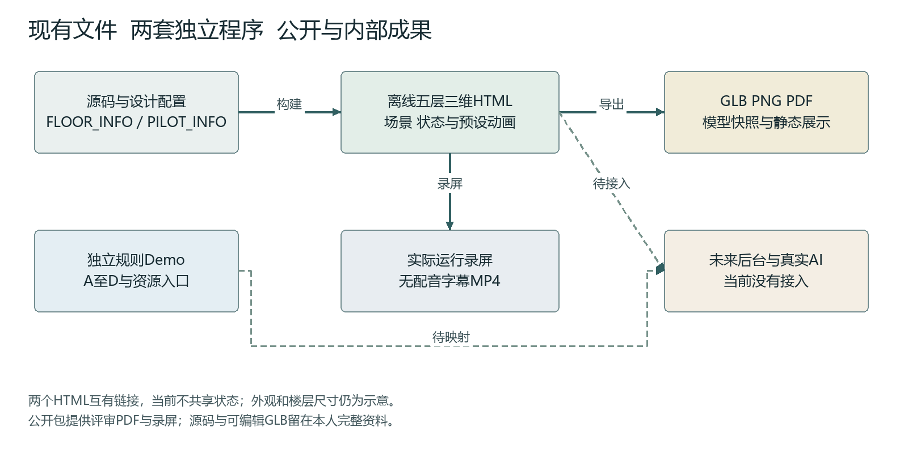
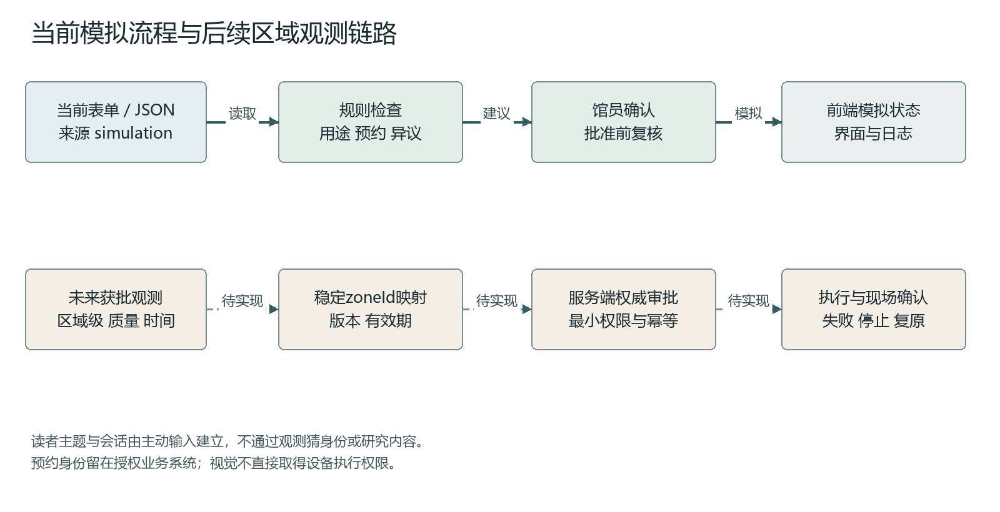
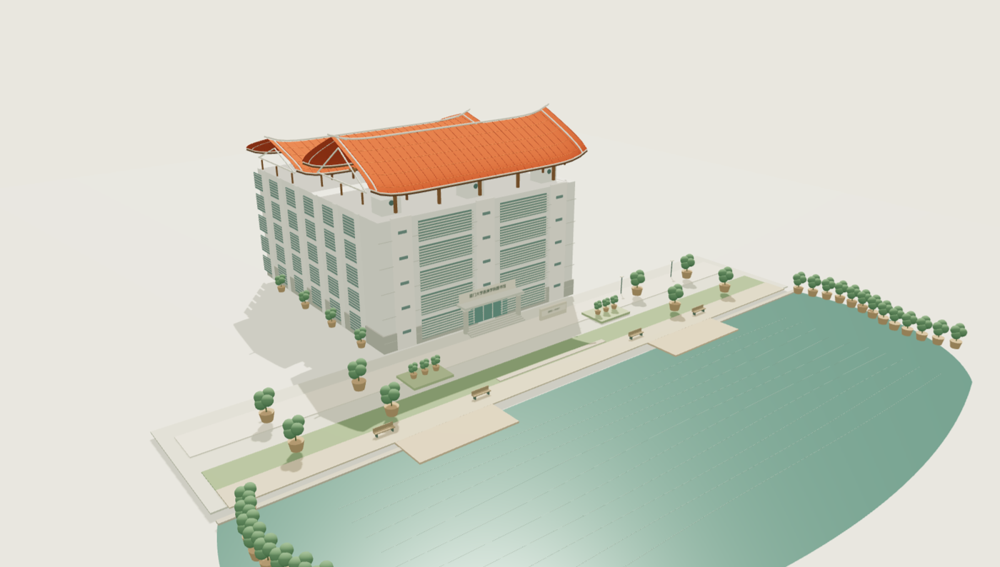
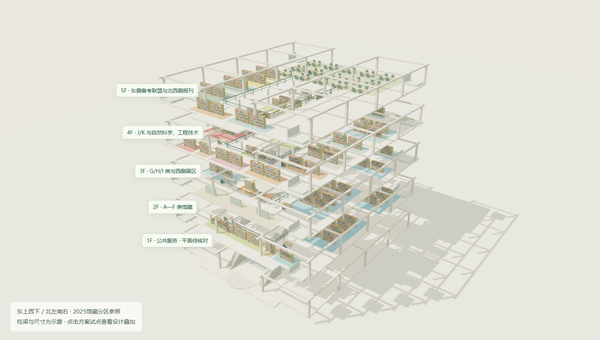
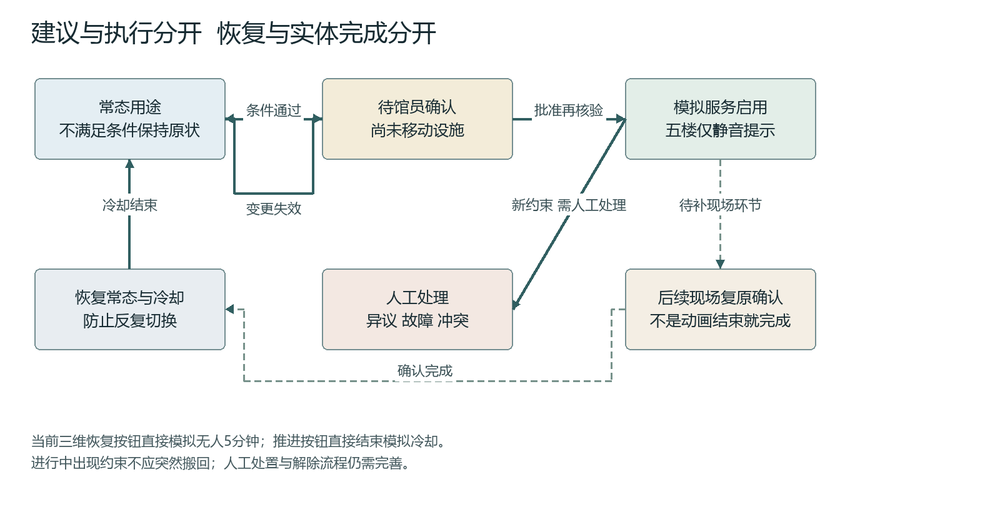
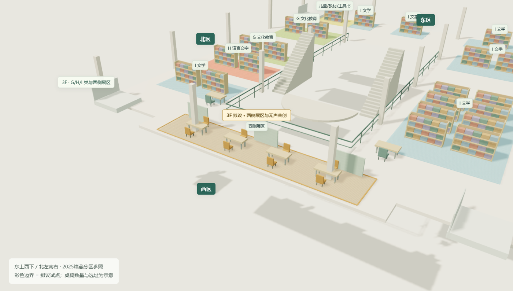
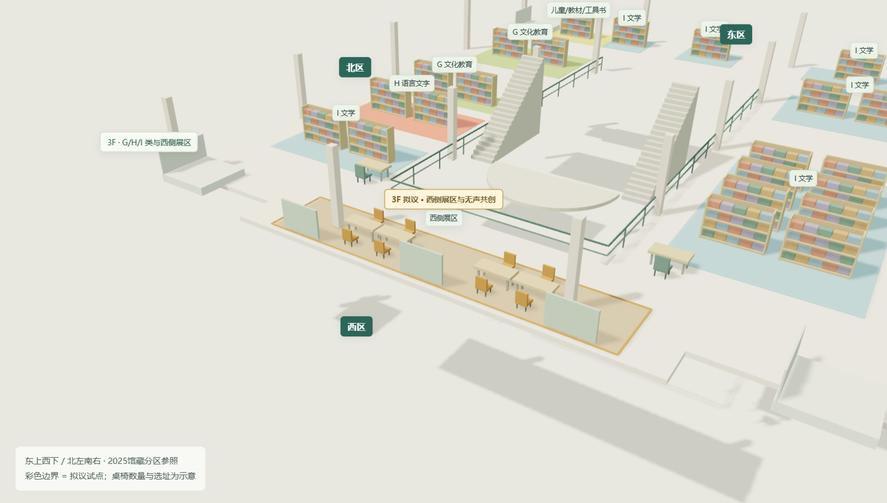
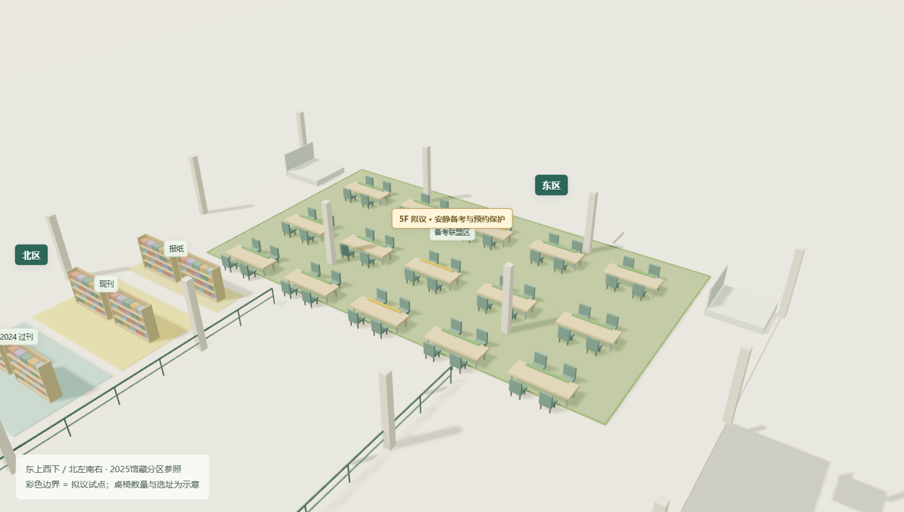

01 这份说明书怎样帮助你掌握作品
1.1 学习目标和阅读顺序
这是一份本人学习、修改和答辩用的内部技术说明书，覆盖创新方案、两套运行原型、建筑和五层空间、可视化文档、演示视频、数据关系、后续试点以及可能被质疑的地方。它包含实现参数、函数名称、源码定位和未完成事项，不属于给图书馆的最小提交材料。公开提交包保持原有范围；本说明书和源码学习包请保存在自己的完整资料中。
第一遍先读第02至04章，把作品解决的问题和界面操作串起来；第二遍读第05至10章，对照源码查看规则、数据和三维如何运行；第三遍读第11至16章，理解真实AI、噪声、安全、隐私、试验和后续合作；最后用答辩题库、讲稿和动手练习检查自己能否独立解释和修改。代码导航页按文件、函数和原始行号展示全文，适合边看程序边读说明。
掌握的标准不是背下项目名称，而是能够完成四件事：说清一个按钮改变哪个变量；从输入追到决策与画面；解释为什么某种条件必须阻止转换；亲手修改一个参数并验证没有破坏保护逻辑。你还应能够指出当前没有实现什么，并提出下一步怎样取得证据。理解、修改、验证和留下真实记录，才能把作品变成自己可以持续负责的项目。
1.2 当前状态不能混在一起
| 层次 | 当前真实情况 | 答辩应怎样说 |
|---|---|---|
| 设计方案 | 服务目标、五层候选试点和实施路线已经整理 | 这是拟议服务设计，位置与尺寸仍需现场核验 |
| 规则服务Demo | 本地JavaScript真实执行输入验证、约束、批准、恢复、会话与入口匹配 | 规则逻辑可运行，人数与预约等输入为模拟 |
| 五层三维展示 | 浏览器实际生成几何、切换楼层、维护每层状态并播放设施动画 | 场景与交互已实现，动画是预设目标位置 |
| 视频与展示PDF | 由运行原型录屏与渲染效果整理 | 它们呈现运行过程及概念设计，不能证明现场效果 |
| 真实感知与业务接入 | 摄像头、视觉模型、大语言模型、实时预约、馆藏API和设备尚未接入 | 这些是下一阶段工程任务，不宣称已部署 |
| 实证效果 | 尚无本馆真实问卷、声学测量、视觉准确率或能源结果 | 列出验证方法，不编造已有成效 |
另有一个本次新增的教学状态机文件 training-engine.mjs。它把现有规则提炼成可独立测试的函数，并演示版本号复核、人工复原确认和显式区域映射。这是学习扩展，不代表旧原型已经拥有这些工程能力，也没有把真实系统接入完成。现有项目原样保存，教学版与原样版分别放置，方便你对照。
1.3 原创贡献与AI辅助的准确表达
你提出了馆舍位于主三背面、从楼纵深关系、湖畔平台与标识、直接看到内部骨架、按一至五楼查看、把试点与同一楼层布局对应、以及控制对外交付范围等具体修正。这些是可依据本项目讨论追溯的设计决策。程序与文案经过AI辅助生成和修改；学习后应以实际理解、复核与改动记录说明贡献，不能把没有亲自完成的测绘、模型训练、调研或部署写成个人经历。
建议建立自己的改进日志：日期、发现的问题、修改的文件与函数、修改前后截图、运行结果、尚存局限。以后答辩说“我负责需求与场景设计，使用AI协助实现，随后通过这些修改和测试核验”会比声称所有代码从零手写更可靠。第三方库的署名和许可证也要保留；阅读和改写代码不会自动消除开源组件、参考资料或合作成员的权利。
02 作品全貌和材料之间的关系
2.1 核心问题和服务闭环
方案拟解决的不是让所有桌椅不停移动，而是让学习任务、空间用途和知识资源更容易匹配。独立研读者需要稳定安静；课程小组需要核对资料或合作任务；馆员需要知道某个服务调整是否与预约、通道和邻近使用冲突。感知提供占用线索，读者表达需求，规则检查约束，馆员确认，服务执行后观察结果并复原。空间变化是其中一种工具，不是必须发生的结果。
一次完整旅程可这样理解：同学选择任务和主题；系统展示适合的空间及可用条件；馆员核对预约、安静与候选范围；需要时调整新增试点设施或信息提示；读者自愿领取资源入口；结束后清除临时会话，工作人员确认服务和实体状态。未通过条件时仍提供已有阅读或预约服务，不能为了展示“智能”强行改变空间。

2.2 文件角色和版本边界
| 文件或目录 | 主要用途 | 与其他文件的关系 |
|---|---|---|
| 01_创新方案.pdf 与可编辑文本 | 本人保存的完整设计与内部路线 | 包含细节和附录，不等于对外精简评审版 |
| 02_可视化设计展示.pdf | 完整可视化展示 | 使用模型渲染图片，PDF不会驱动原型 |
| 03_技术原型Demo/index.html | A至D机制与资源服务演示 | 与五层三维互有链接，但不共享状态 |
| 06_三维空间设计/三维空间交互展示.html | 校园、馆舍、剖切与五层试点 | 已打包Three.js与项目代码，打开时生成场景 |
| 06_三维空间设计/模型源码 | 可以修改与重建三维网页 | build.cjs将scene.js依赖打入模板 |
| GLB 和效果图 PNG | 可编辑模型快照与静态画面 | 导出后独立保存，修改GLB不会回写源码 |
| 07_初赛提交材料 | 最小对外成果与本人准备说明 | 提交子目录与本人辅助文件分开放置 |
| 08_本人学习与答辩资料 | 本次内部说明书与源码学习资料 | 用于学习、修改、答辩准备，不加入公开包 |
旧A至D机制场景的52席来自24＋12＋8＋8的演示容量。它不是五层图书馆的总座位数，也不是某层现状平面。三维源文件还保留了早期A至D概念几何，但setView目前将interior.visible设为false，主界面“方案试点”进入的是新的五层候选方案。不能把代码中仍存在的旧几何误认为现在页面主展示。
2.3 两套程序尚未自动联动
规则Demo从HTML输入框读取区域人数、置信度、持续时间和约束，更新states.B。三维页面使用floorSelection、view以及五个pilotStates保存楼层交互。两者没有共同后端、消息总线、localStorage或跨页自动传参；在一个页面批准B区不会让另一页面三楼自动移动。页面链接是导航关系，不是数据接口。
如果后续要联动，需要先确定区域标识与现场候选位的对应，再建立带时间、版本、来源和质量标记的消息。不能简单把“B区”硬编码等同于“三楼”，因为B是早期通用机制，三楼开放展区又只允许无声共创。教学映射函数因此要求显式floor和zoneId，只产生建议线索，conversionAuthorized始终为false。
03 设计逻辑和五层服务怎样解释
3.1 用途稳定与有限变化
动态空间重构在本项目有三个尺度。信息尺度调整导览、席位提示和资源屏；服务尺度调整某候选区的任务安排与审批；设施尺度只考虑少量新增移动桌组或展板。建筑结构、原书架、既有馆藏和主要通道不参与自动重构。先选最小变化，再检验服务是否改善；如果信息调整足够，完全可以不搬家具。
“智能体”表示后续感知、需求理解、工具查询、候选建议和反馈检查的组织方式。当前程序验证其中的规则和交互环节，没有部署学习型自主智能体。规则层可以独立于AI运行，这是对高影响动作的明确约束。AI可帮助理解任务与解释资源，但不能替代馆员确认、专业声学检查或预约权利。
3.2 每层的目的和不可改变项
| 楼层 | 任务与候选变化 | 保护项与当前不确定性 |
|---|---|---|
| 1F | 导览台与咨询分流，模拟排队6人 | 真实一楼平面未公开；不改借阅总台、密集书库和入口 |
| 2F | 新增小桌支持两人无声结对 | 馆藏、书架和回廊保留；说话转研讨室 |
| 3F | 西侧展区预约无声共创，两组共8个示意席位 | 核对展览档期；中庭台阶、回廊与安静阅读保留 |
| 4F | 技术类馆藏旁无声项目检索，资源屏切换清单 | 技术馆藏和文化交流用途保留；清单待学科馆员核验 |
| 5F | 备考席位无声提示，绿为候选，金为预约 | 不移动原桌椅、不转研讨；具体席位数据是预设 |
一楼“排队6人”、二楼“两人申请”等文字属于PILOT_INFO的预设触发情境。三维页面不会真的检测排队，也没有按人数运行阈值判断。真正可操作的阻止条件是异议、预约和模拟冷却等。答辩时要把设计场景描述和实际计算条件分开，不要指着预设说明声称算法发现了现场需求。
3.3 为何先试三楼以及何时不应试
三楼西侧展区在公开导览中具有可识别的位置，适合先讨论预约、展览档期与有限活动的组织方式，因此被选作首期候选。但公开导览不是场地授权，也未证明该处噪声条件合适。现场若存在走道拥挤、频繁展览、读者抵触或家具搬动明显干扰，首期可以改为只做预约与资源屏服务，或转到已有可隔声房间。
这不是承诺必须在三楼搬动展板。试点要有退出条件：安静满意度下降、通道被占、复原工作量不可接受、预约冲突或信息误差持续发生时，暂停相关动作。图书馆的稳定使用质量优先于让动画效果变成实体设施。
04 界面逐项操作和现场展示顺序
4.1 五层三维页面的操作地图
| 按钮或控件 | 操作结果 | 讲解时应提示 |
|---|---|---|
| 建筑外观 exterior | 显示主一至主五并设置全景相机 | 楼群交代关系，改造范围不覆盖其他主楼 |
| 定位图书馆 library | 隐藏校园楼群，显示主三后部馆舍克隆 | 馆舍、入口、湖面与平台一起保留 |
| 楼群正面与背面 | goCamera设置预设机位和观察目标 | 这是相机变化，不是模型变成另一个地点 |
| 湖畔与入口近景 | 查看馆舍、标识、平台和到馆环境 | 湖岸形态与尺度为示意，不是测绘 |
| 空间剖切 floors | 显示五层内部，默认关闭方案叠加 | 不是计算机切割实体，而是选择显示楼层组 |
| 一楼至五楼 data-floor | 选中该层，隐藏其余层 | 地图、剖切和试点共用同一个楼层对象 |
| 分层展开 explode | 把层间距离由4.8变为9个概念单位 | 仅展示间距改变，不是实际层高增加 |
| 家具开关 furniture | 关闭家具功能区，保留结构示意 | 显示的柱梁骨架不能用于结构设计 |
| 采光顶 skylight | 整体合拢时显示可选采光顶 | 单层或展开时禁用，几何仍为参考示意 |
| 方案试点 interior | 进入本层试点，未选层时默认三楼 | 内部按钮ID沿用旧名字，主界面已展示五层 |
| 平面俯瞰 top | 俯看当前楼层，保持方案叠加状态 | 当前仍用透视相机，不是严谨建筑平面图 |
| 放大本层试点 pilotFocus | 相机对准PILOT_INFO候选坐标 | 改变视野，不改变候选区位置 |
| 保存效果图 snapshot | 从当前画布导出PNG | 静态截图不能继续交互 |
| 导出当前GLB export | 导出当前可见场景或单层 | 属于内部可编辑成果，公开提交包不带此文件 |
4.2 请求 批准 恢复的完整操作
以三楼为例：点空间剖切，再点三楼，叠加本层试点，放大候选区。初始active=false、pending=false、target=0。点击生成建议只令pending=true，设施没有开始动画。馆员确认时blockReason再核验异议、预约和冷却；通过后active=true、target=1，animate逐帧把新增设施从常态位置移到目标位置。
勾选异议或预约后，未批准的pending建议失效，需要重新核对。如果活动已经启用，程序显示馆员接管提示，模型不会自动把进行中的设施移回去，active仍可能为true。这避免画面无解释地突然恢复，但当前并没有真正的人工接管工单或解除流程，生产系统还需补充。
“模拟无人5分钟 恢复”按钮直接设置target=0和cooldown=true，并不真的从传感器累计300秒。它用于演示恢复原则。随后点推进冷却10分钟会直接清除布尔冷却标记，也不是现实时间计时。常态用途按钮是演示复位，会绕过冷却；现场产品不应保留这种对所有人开放的复位权限。
4.3 规则与资源原型的输入界面
A至D平面示意可点击或用键盘选择。选择区决定read()中的zone；人数必须为0至30整数，持续和无人时间在0至7200秒内，置信度在0至1。B区最大演示容量为12；输入人数允许到30是为了能演示超容量被阻止，不意味着所有区都有30席。置信度滑块不是现场视觉结果，合成骨骼只绘制至多6个图标。
声学隔离、时段可用、邻区异议、设备故障、预约冲突分别对应五个布尔约束。生成调度建议列出每条规则通过或失败。馆员确认是第二次检查，不会因为第一次全通过就永久有效。推进模拟5分钟增加clockSeconds并根据人数更新持续或无人值；时钟不会随着真实时间自动增长。
自愿会话单独运行。读者勾选同意并主动填写主题后，join()按关键词匹配官方入口，再补一个通用馆藏目录入口。此步骤并不要求B区已激活；它是独立资源服务演示。结束会话清除主题和资源区域，空间使用状态仍保留。导出日志是浏览器下载JSON，不上传到服务器。
4.4 推荐答辩演示及浏览器故障处理
建议用约三分钟串联三维主线：楼群正面与背面约20秒，定位馆舍湖畔与入口约20秒，五层整体与骨架约25秒，三楼请求后无动作及确认后动画约40秒，异议或预约阻止约20秒，五楼只亮提示约20秒，恢复和冷却约20秒，最后说明模拟范围。资源服务另用30至45秒展示同意、主题与真实入口。若时间只允许一个程序，主讲五层并用一句话解释资源Demo独立。
演示前完整解压，使用Edge或Chrome，先检查三维能显示、视频能播放、窗口比例和本机声音。浏览器不能启动WebGL时可用已保存效果图与录屏说明；视频当前没有配音，必须另录并合成最终MP4。离线时主原型仍运行，点击官网资源需要网络。不要在老师面前把无法打开的官网链接解释成算法失败，两者是不同故障。
05 A至D规则源码的逐步拆解
5.1 HTML CSS JavaScript的分工
现有index.html是一个单文件：head里的style定义颜色、栅格、按钮和小屏布局；body定义工作台、SVG区域图、会话和日志；末尾script负责状态与事件。页面加载后DOM元素已经存在，所以脚本可以用document.getElementById取到控件。$是缩写函数，作用是取元素，不是外部框架。原型没有React、数据库或服务器。
源码学习包的分离学习版把完全相同的样式和逻辑拆成styles.css与app.js，HTML只引用它们。拆分便于学习，并未增加真实AI或接口。修改时保持元素id与脚本引用一致；例如把approve的id改名而不更新脚本，会导致null访问或按钮失效。原样保存版保留可比对的完整单文件。
5.2 关键变量和读取路径
| 变量或函数 | 保存什么 | 应注意的细节 |
|---|---|---|
| states | 各区用途，实际可变的是B | A固定静音 C特色阅读 D预约研讨 |
| clockSeconds | 从09时起的模拟秒数 | 只由advance或重置改变，不是Date.now |
| cooldownUntil | 下次允许候选的模拟时刻 | 恢复时设为当前模拟时间加600 |
| pending | 上一次通过核验的输入快照 | 当前批准复核条件，但没有后端版本号 |
| events | 内存中的事件数组 | 刷新即清除，主动导出后文件独立保留 |
| joined | 是否加入临时资源会话 | 不是账号登录，不是识别到具体人员 |
| emptySince | 无人状态的辅助变量 | 恢复判断主要依据vacancySec，并非连续真实传感器流 |
| read() | 从控件值构造区域对象 | Number转换后检查整数 范围 有限值 |
| checks(x) | 返回文字与真假结果数组 | every要求全部通过，不是综合打分 |
5.3 如何形成候选和避免误批准
const allowed = checks(input).every(rule => rule[1]); // true 才能形成待审建议 // 它不是AI分数，也不是多数规则通过就允许
evaluate()先读取并验证输入，再废除旧pending并显示规则列表。故障优先处理；选择非B区时保护原用途；B区已在使用且约束恶化时safeAbort进入人工接管。若B区为空且已在研讨状态，按照无人时间选择等待或恢复。只有常态可转换情境且所有检查通过时才保存pending、设待馆员确认并启用批准按钮。
checks具体要求为：感知无故障、区域等于B、人数至少3且不超过该区容量、置信度至少0.70、候选持续至少120秒、有隔声条件、时段可用、没有预约冲突、没有异议、模拟时钟已过冷却。这些数字只是在演示中解释规则，未通过本馆样本校准。置信度0.70也不是70%实际准确率。
approve()不直接信任pending，而是再次调用read和checks。任一条件失败就取消待审并保留常态。输入变化事件还会主动invalidate，因此通常批准按钮在变化后已被禁用。但当前代码没有用户权限、服务端事务或并发控制，不能凭前端按钮禁用就认定生产环境安全。
5.4 使用中异常与复原
safeAbort仅在当前选择B且B处于研讨使用时检查故障、异议、声学条件、预约、时段和容量超限，发生问题就设为人工接管并记录降级。它只改变仿真状态，没有给真实设施发指令。输入事件之后又统一写入“输入已变更”的提示，可能覆盖更具体的降级提示；状态本身仍为人工接管。这是需要在下一版修正的界面信息问题。
研讨结束预设把B置为使用中，人数为0。首次检查无人不足300秒，只提示等待。推进一次模拟五分钟后vacancySec达到300，evaluate恢复常态、设置600秒冷却。再过模拟时间才允许新候选。clearSession(false)会清除加入状态与资源，但保留主题文本，这是当前实现的小差异；手动结束会话才默认清除主题。生产版应明确统一结束时的数据清理策略。
5.5 资源推荐与日志为何可信又有限
资源index只有5个公开入口项，每项包含title、url、tags和note。匹配使用topic.includes(tag)，没有语义向量、全文检索或大模型回答。同一个入口可能被不同专题说明引用；不保证把任何主题变成精准论文清单。通用目录入口始终补入，避免没有标签匹配时完全没有服务。推荐文字明确说明只有入口，没有实时检索。
主题与日志使用textContent写入DOM，可避免把主题内容当HTML执行。资源链接从固定索引建立，设置新窗口和noopener。日志包含time、type、detail、dataSource，time是模拟时刻且dataSource为simulation。日志能证明代码运行过相关分支，不能证明馆员真实审批、实际节能或图像识别。
06 数据字段 数据联系和清理策略
6.1 当前区域输入的完整数据字典
| 字段 | 类型与范围 | 含义和来源 |
|---|---|---|
| zone | 字符串 A/B/C/D | 早期机制区域；来自选区控件，不是实际书架编码 |
| people | 整数 0至30 | 区域模拟人数；容量是否允许由规则另检 |
| confidence | 数字 0至1 | 模拟聚集置信度，不是实测识别精度 |
| durationSec | 数字 0至7200 | 候选聚集持续秒数，来自手填或模拟推进 |
| vacancySec | 数字 0至7200 | 连续无人示意秒数，当前没有传感器自动累计 |
| acoustic | 布尔值 | 演示隔声条件，不能靠点击勾选证明现场合格 |
| available | 布尔值 | 目标时段是否可用，未查真实排班 |
| objection | 布尔值 | 邻区异议，模拟馆员收到反馈 |
| sensorFault | 布尔值 | 模拟故障，不是硬件自检结果 |
| reserved | 布尔值 | 预约冲突示意，未连接实际预约系统 |
{
"zone": "B", "people": 4, "confidence": 0.9,
"durationSec": 150, "vacancySec": 0,
"acoustic": true, "available": true,
"objection": false, "sensorFault": false,
"reserved": false
}importData只接受这10个字段。它先检查文件存在且不超过100000字节，再JSON.parse，拒绝数组、非对象和额外字段，验证区域、人数、置信度、时间与五个布尔值，最后同步界面并重新评估。“reserved”:“false”是字符串，会拒绝；真正的false才是布尔值。不要把姓名、学号、图像、门禁明细或未获授权数据塞进示例。
6.2 三维数据的三个层次
FLOOR_INFO描述馆藏参照：n、title、summary、tags、color、verified和zones。zone的label、x、z、w、d、color、kind决定功能色块与家具类型。verified=true仅表示该层相对馆藏分区有公开导览参照，不表示层高、柱梁、房间尺寸或候选设施已测绘。第一层verified=false，明确缺少公开平面。
PILOT_INFO描述拟议服务：每层的标题、位置、候选边界、常态与启用用途、预设触发情境、方案动作、保护项、指标和推进阶段。它是设计配置，不是读者数据。pilotStates是浏览器运行状态：active、pending、cooldown、progress、target、objection、reserved、message和kind。几何对象与状态对象通过同一个楼层数组下标n减1关联。
storeys保存info、root、structural和furniture四类引用；pilots保存info、root、moving、activeObjects、replaced和apply。一个楼层root的子节点包括结构、馆藏家具以及后加的试点。剖切、方案与俯瞰都使用这些对象，避免三套平面彼此错位。楼层信息必须按一至五排列，否则storeys[info.n-1]会指向错误层。
6.3 未来真正需要的连接方式

未来应引入稳定zoneId，例如LIBRARY_F3_WEST_EXHIBITION_CANDIDATE，同时保存floor、purposePolicy、geometryVersion和现场确认状态。一个区域ID对应预约查询和许可范围，不能用界面中文名称当唯一键。占用观测至少附observedAt、expiresAt、source、quality、modelVersion；过期、故障或低质量输入只产生人工核对任务，不生成实体动作。
申请对象应另含requestId、zoneId、taskType、requestedWindow、proposalVersion和approvalState。预约接口只向调度返回是否冲突、可用时段、容量与版本，不把预约者姓名发送给视觉模块。读者会话另用临时sessionId存主题与资源需求；如需登录预约，由授权业务系统处理，不能凭骨骼轨迹猜测谁加入了会话。
实体执行对象与建议对象也要分开。推荐中可写desiredScene；通过确认后产生commandId和幂等键，设备接口返回accepted、applied、failed或unknown。超时的unknown不能当success展示。核对实际状态后再更新界面，并保留回滚或人工处置入口。本项目目前只有前端模拟，不具备这些生产接口。
6.4 数据在哪里保存以及谁能看
| 数据 | 当前保存位置 | 后续设计注意事项 |
|---|---|---|
| 原型状态与输入 | 浏览器页面内存 | 刷新清除；多人场景需权威后端与权限 |
| 自愿主题与资源列表 | 页面控件和DOM | 退出同意要清除；不要写进个人画像 |
| 操作日志 | 内存 events 或主动下载JSON | 导出文件不会因页面刷新消失，须自行保管 |
| 模型与PNG | 本人目录或浏览器下载 | 包含可编辑成果，公开包不交GLB或源码 |
| 本机录音预览 | File对象和ObjectURL | 只预览，不上传、不自动写回MP4 |
| 未来视频帧与骨骼 | 本项目尚未产生 | 拟端侧短时处理；能否采用须先审查合法性 |
| 未来业务汇总 | 本项目尚未取得 | 仅经授权按目的使用，不扩大到身份追踪 |
07 三维建模的原理与建筑代码
7.1 场景不是图片也不是测绘BIM
三维展示使用Three.js，在浏览器WebGL中绘制由程序创建的几何与材质。scene是场景容器，camera决定视野，renderer把可见对象投影成像素。鼠标旋转后仍能看其他方向，是因为对象具有三维坐标；它不是把一张照片拉伸成透视，也不是导入了完整真实建筑测绘模型。[S04]
当前模型可以称为参数化概念场景或数字空间展示，不应直接称为已与真实传感器同步的数字孪生，也不是具有专业构件属性、精确坐标和工程协同能力的BIM。柱梁骨架用来帮助看懂楼层组织，不能用它计算承载、消防距离、家具可走路线或施工工程量。

7.2 坐标 父子层级和尺寸
Three.js场景采用X、Y、Z三轴，Y作为高度。楼层局部导览方向约定为东在负Z、北在负X，因而俯瞰中东上西下、北左南右。不能把屏幕右边无条件当作东，因为相机可旋转。一个家具子组的坐标相对其父对象；父楼层抬高后，所有子家具随楼层移动，家具自身的局部位置不必改变。
box(parent,name,w,h,d,x,y,z,color)创建中心位于给定坐标的长方体并加入父节点。w、h、d是几何宽高深，不是边界坐标。若要让高度h的构件从地面起立，中心Y通常为h除2；书桌和柱体代码里的中心高度由此而来。chair和table返回组，组内桌面、腿和椅背再用相对位置表达。单位按概念米组织，但现场未测量，不能把程序中14误认为已经确认的14米净宽。
7.3 建筑外观结构怎么组成
architecture.js的buildExterior创建主三前部基座、中央高部、前廊入口、后部图书馆以及四座从楼。后部馆舍rearLibrary的局部Z原点平移到负46，馆体深44，最远端约为负68；主三前部约到正23。四座从楼的longitudinalExtent均为[-68,23]，白色主体深91，中心Z为负22.5。这个关系来自项目修正与参考估计，表示纵深对齐，不是公布的测绘结果。
中央高部在代码中按12层节奏绘制，作为校园建筑背景；本方案的馆内展示和试点只有五层，没有把6至12层算作图书馆改造面积。窗带、白色竖向构件、石材基座、橙红屋顶和开敞屋盖支撑帮助表达嘉庚建筑外观。建筑外观与室内楼层层高不完全一致，是概念场景分开建模的局限，后续准确建模需统一真实基准。
7.4 檐角 屋脊和屋面网格
height(u, v) = pitch * (1 - v)^0.79
+ 1.55 * abs(u)^9 * (0.78 + 0.22*v)
+ 0.32 * v*v
// u: 屋面横向 -1..1 v: 屋脊到檐口 0..1roof内部把屋面沿横向分36段、坡向分16段，计算两侧顶点并组织三角形索引。pitch项使屋脊高而檐口低；abs(u)的九次方在横向两端明显增大，形成端部上翘；末项调整坡面曲线。computeVertexNormals计算法向，让光照随曲面变化。这个公式是形态拟合，不是传统建筑结构受力或屋面排水计算。
tile_rib与tile_course用TubeGeometry沿曲线添加瓦垄和横向纹理。white_upturned_eave、swallowtail_ridge与raised_swallowtail_tip补出檐口、屋脊和端部翘起。beam以两点间距离确定长度，再用四元数把默认竖向梁转到两点方向；因此斜撑不需要手算欧拉角。屋顶的真实尺寸、做法和材料仍要核验。
7.5 图书馆单独查看和湖畔环境
buildLibraryEnvironment把步道、绿化、台阶、平台、湖面、涟漪、长椅、路灯和入口标识加入后部馆舍的场景层级。湖面由二维Shape轮廓构成，旋转至水平；涟漪是细管曲线，不是实时流体仿真。标识用Canvas绘制文字，再作为CanvasTexture贴到平面。离线导出GLB时纹理可内嵌，不必另外寻找字体图片。
scene.js在建好rearLibrary及环境后clone(true)，形成libraryExterior，局部Z改为0。切换library视图时校园exterior隐藏，libraryExterior显示，因此主一主二主四主五不出现在孤立馆舍场景。复制的是对象树，几何和材质可能仍共享引用；深克隆层级不等于独立复制所有GPU资源。后续若单独改材质，必要时应clone材质以免影响另一个视图。
湖、平台与入口是到馆情境展示，不是让系统在湖岸自动调度家具。当前sign文字与精确位置也为示意。参考照片可以核对可见形态，不能凭照片准确还原室内结构或没有拍到的背面细节。说明书图像和源文件均应保留这些不确定性。
08 五层馆藏 剖切和试点几何
8.1 公开导览怎样转成几何
library-layout.js的FLOOR_INFO把公开馆藏类别与大致方位转成一组功能区记录。二楼A至F、三楼G/H/I及西侧展区、四楼艺术历史与技术类、五楼东侧备考及报刊等只是相对分布参照。一楼没有公开平面，因此仅创建借阅服务概念。2026馆方通知提到馆藏调整，现场架标与管理方确认应优先，不能把2025导览叫作实时准确图。[S02][S03]
slab函数按不同楼层建立二维轮廓，二至五楼再挖中庭洞口，通过ExtrudeGeometry拉出薄楼板。Geometry绕X旋转，转为水平面。rail、schematic_column和beam创建栏杆与结构示意；楼梯由逐级台阶与弧形平台组成。脚本没有读取建筑CAD图，没有计算楼梯合规坡度，也没有建立建筑碰撞系统。

8.2 自动填充书架和学习桌
furnishZone按kind选择类型：books生成书架，study生成备考桌组，exhibition生成展板，room生成低隔断和桌椅，service生成服务台。书架排数按zone.d与示意间距计算，列数按宽度取1、2或4；这些算法只是避免每个书架手写，并不证明真实藏量、书架数量或实际通道宽度。
rack用背板、立柱、层板和不同颜色的book_cluster表达书架。它们是低细节几何，不对应某本真实图书，颜色也不代表真实书脊。五楼学习桌按预设网格布置，现有模型中的示意桌椅数量不能当作公开座位系统数据。
8.3 每层的试点配置与对象分类
floor-pilots.js按一至五楼PILOT_INFO创建proposed_floor_n_pilot组，并初始隐藏。彩色地面与细边界表示候选试点区域。对象分为moving、activeObjects与replaced：moving记录常态和启用目标位置；activeObjects只在启用过程中显示；replaced记录叠加方案时需要隐藏的原有示意展板组。
| 楼层 | moving实际记录 | activeObjects与其他行为 |
|---|---|---|
| 1F | 两台新增导览台 | 启用后显示队列提示几何 |
| 2F | 2张新增小桌和4把示意椅 | 显示资源提示屏 |
| 3F | 4张新增折叠桌 8把椅 3块移动展板 | 叠加时隐藏旧西侧示意展区组，用新增组表达 |
| 4F | 2张新增检索小桌和4把示意椅 | 显示项目资源提示屏 |
| 5F | moving为空，没有家具动画 | 15个预设桌边标记，中央一列3个为金色预约 |
三楼replaced隐藏的是模型里的示意展板组，不意味着搬走真实馆藏或取消展览。当前protectedSignature记录位置与旋转，不能证明可见性没有改变。真实三楼活动必须与展览档期协调，必要时只叠加信息服务，不改展板。
8.4 单层 骨架 展开和俯瞰如何共享模型
syncFloorVisibility按floorSelection控制每层root.visible。未选层时显示全部，选层时只显示相应楼层。root.position.y由floorOffset计算；正常层高4.8，展开间距9。showFurniture控制馆藏家具和试点的可见性；部分梁在方案或俯瞰中隐藏，避免遮挡内部。它是显示优化，不能因此判断结构已经移除。
setView切换视图并设置相机。floorPlan把相机放在当前层上方约93个单位，观察该层中心；但camera仍为PerspectiveCamera。其画面适合看功能相对位置，不是正交工程平面。后续若要用作尺寸比较，应引入OrthographicCamera、统一图纸比例和实测坐标。
楼层剖切的含义是“按组隐藏其他楼层并呈现内部”，当前没有任意切割平面、实体剖面帽封或剖面计算。老师问是否能任意剖切，应明确现在可按楼层与家具层级看内部，任意剖切属于下一步显示功能。
09 三维界面 状态机 相机和动画源码
9.1 界面状态由哪些变量共同决定
view区分exterior、library、floors、pilot和floorPlan。floorSelection为0表示总览、1至5表示单层；proposalOn决定是否叠加候选试点；expanded决定层间展示距离；showFurniture、showSkylight与labelsOn控制显示层。pilotStates的五个对象各自记忆状态，因此切换楼层不会把三楼的pending自动带到五楼。刷新页面则全部重新初始化。
current()取当前层状态，info()取该层设计配置。syncUI根据这些变量更新按钮禁用、侧栏、标题、条件复选框、楼层选中、面包屑和图例。按钮背景是状态的表达，不是安全权限。把界面显示逻辑集中在syncUI减少多处文字不一致，但当前文件仍把渲染、业务状态和DOM写入放在一起，后续可拆成控制器、状态模块和渲染模块。
9.2 申请条件的先后顺序
blockReason先检查是否已选楼层，再检查异议、预约、冷却。request只在没有阻止原因时设pending。approve要求pending存在，再调用blockReason；即使按钮能点，条件不合格也不能启用。pending批准后会清除，active设为true，target变为1。这个流程没有真实申请人和批准人，也没有认证、日期时段或事务。

三维的active、pending和cooldown为独立布尔字段，当前缺少明确的manualReview状态；进行中出现异议时只更新提示。新增教学状态机用mode、pending、version与manualReview更明确地演示条件变更和旧批准防护。它仍是内存练习，不是已部署后端。
9.3 预设位置如何变成平滑动画
progress += (target - progress) * min(1, dt * 2.8); object.position.lerpVectors(readPosition, activePosition, progress); object.rotation.y = readRot + (activeRot - readRot) * progress;
animate每帧读取performance.now并计算dt，上限0.08秒，减少窗口暂时卡顿造成的过大跳变。progress逐步接近target；差距小于0.002时直接落到目标。位置用线性插值，旋转用角度插值。当progress大于0.4时才显示activeObjects。这个阈值只影响显示时间，不是人群置信度，也不是设备反馈。
它没有路径规划、轮子动力学、噪声模型、家具碰撞、读者避让或实际速度限制。某桌从A插到B时可以在虚拟世界穿过对象；真实搬动必须先选安全路线、确认候选区域空闲并由工作人员实施。不能把动画看起来顺畅作为“物理上一定能实现”的证据。



9.4 交互拾取和标签投影
Raycaster把屏幕点击位置转换为相机射线，找出最前面的可见相交对象。按下与抬起移动距离大于5像素时当作拖动，不触发进入操作；否则查对象或其父节点userData。楼层通过userData.floor定位，主三通过main3标记进入馆舍。父链查找让点击某个窗或书架也能找到整体对象。
在library视图中，当前拾取只排除名称含lake或shore的对象，其他景观如灯或入口装置也可能触发进入剖切。这是宽松的概念演示交互，不是精准馆体选择；后续应使用明确selectable类型。标签由三维坐标project到屏幕，p.z、屏幕范围和labelsOn决定可见，不具备完整遮挡检测，所以标签可能互相覆盖。
9.5 渲染性能和调试接口
renderer像素比例限制为devicePixelRatio与2的较小值，避免高分屏无限增加画面像素。阴影开启，sun阴影贴图2048，材料使用标准光照，色彩设SRGB并采用ACES色调映射。renderDirty用于按需重绘；但animate仍每帧执行控制与标签位置更新，因此“按需渲染”不等于页面完全没有帧开销。
material缓存把相同color与opts组合复用为同一材质，减少重复对象。模型仍有较多重复几何，可考虑InstancedMesh和不同细节层级。window.modelApp暴露setView、setFloor、getState、exportGLB、getArchitectureState等，仅用于开发核对。getState中meshCount实际读取renderer.info.render.triangles，是绘制三角形数，不是网格对象数量；movableTables也包含椅子和展板的移动对象，名字不能按字面解释。
10 构建 GLB 图片 PDF和视频的关系
10.1 源码如何变为离线HTML
package.json固定three为0.180.0，esbuild为0.25.10。build.cjs从scene.js开始处理import，bundle为true把项目模块和第三方依赖整合，format为iife输出自执行脚本，target为es2020，minify=true减小体积。再读取viewer-template.html，用构建内容替换/*__BUNDLE__*/，写到源码上一级的三维空间交互展示.html。模板不是可独立运行的最终页面。[S05]
构建脚本用函数替换字符串，避免JavaScript中出现的美元符号被String.replace当替换指令解释；同时转义结束script标签片段，避免脚本文本提前关闭HTML标签。构建只更新HTML，不自动重导所有GLB、PNG、PDF或MP4。修改后的网页和旧快照可能暂时不一致，必须安排重新导出。
10.2 为什么GLB改了网页却不变
本项目网页不是加载GLB渲染，而是运行scene.js程序现场生成几何。GLB是某一时刻通过GLTFExporter导出的快照。把GLB导入Blender修改，只改变该GLB；下一次打开HTML还是根据原JavaScript建模。若要回写，需要把改动转换为源码参数，或改造网页为GLTFLoader读取外部模型。后一方案还要处理文件路径、浏览器本地加载限制和资源更新。
exportGLB按当前view选择校园、馆舍或楼层；单层克隆后把Y位置归0，便于三维工具查看。onlyVisible=true只导出可见对象，binary=true导出二进制glTF。导出时如果家具动画还在中途，得到的可能是中间位置，应等待状态稳定。默认的当前对象导出不是一套完整历史动画录像。
10.3 截图 可视化文档和说明书
snapshot先renderer.render，再canvas.toBlob生成PNG。preserveDrawingBuffer=true有利于读取画布，但会增加某些设备开销。图片只记录当前角度与可见状态；不能凭一张截图确认其他方向通道、遮挡或真实尺寸。展示PDF汇总不同视角及文字，是供评审快速理解的静态成果，不把3D可编辑内容嵌入对外PDF。
本说明书的代码索引与注释从当前原始文件核对生成；PDF提供连续阅读、目录页码和打印，网页版提供搜索、章节跳转与全源码导航。解释材料与原代码版本一起保存，后续修改时应更新版本和核验记录，避免旧说明书指向已经改变的函数。
10.4 两个视频版本和本机原声预览
本人完整资料中的03目录保留早期A至D详细操作视频，约5分25秒；对外初赛目录里的新视频约2分59秒，主线为五层场景。二者都是当前无配音字幕版。不能把老视频的132条字幕或分段时间表照搬到新视频，否则旁白会错位；新视频应使用07目录的本人配音参考。
演示视频播放.html内置无声视频，并允许选择本机录音。文件选择后URL.createObjectURL形成浏览器临时地址，audio加载元数据；播放、暂停、跳转、音量等事件尝试让音频跟随视频。它没有向网络上传录音，也没有导出新MP4。刷新后须重新选择，换电脑后仍需重新选录音。
网页同步预览与真正音轨合成不同：最终交付必须在剪辑软件中把本人录音加入时间线，核对开头偏移、段间停顿、音量、画面结尾并导出有音频轨的MP4。字幕版视频存在，不代表原声已经被写入。以本人录音为准，本说明书不再尝试生成或克隆你的声音。
10.5 版本校验与失败定位
修改后先看浏览器Console有无语法或null错误，再核对对应按钮和状态。构建报Cannot find module先确认在含package.json的源码目录安装依赖；npm run build成功只说明打包完成，仍需打开页面核验。GLB无法读取时检查导出过程与文件是否完整；模型引用某图片失败时检查目录是否完整解压。
源码学习包保留SHA256清单，能确认原样文件没有在讲解过程中被改写。旧项目的既有验证与本次新增练习测试是不同证据：前者记录先前离线运行与导出核对，后者只证明教学函数的边界行为。两者都不代表真实图书馆已经验收。
11 后续视觉感知 AI智能体和资源接入
11.1 为什么姿态不能直接判断研讨内容
视觉模型能给人体位置和关键点等观测，不会可靠地告诉系统“这些同学在讨论红树林”。坐姿、头部朝向、距离都只是线索，两个读者坐近可能在独立阅读、经过、等待同伴或无声核对。主题必须来自主动填写或活动标签；有声交流需求也必须由读者表达，而不能因聚集自动把阅读区转换成讨论区。
MediaPipe Pose Landmarker等工具提供姿态关键点检测能力，官方文档说明图像、视频与实时流等使用方式。[S06] 它只能作为候选技术之一；本项目未实际调用，未训练模型。多人坐姿、遮挡、俯视角度和现场算力是否适用须单独比较。不要把某关键点置信度直接当成“群体正在研讨”的校准概率。
11.2 从画面到区域观测的拟议步骤
试点获批后先限定可采区域、摄像范围与告知机制。端侧读取短时帧，检测质量，估计人数和占用；再把观测映射到已确认的zoneId，形成区域级时间序列。临时跨帧关联若确有必要，只保留短时工作状态，不形成长期个人轨迹。原始帧与关键点不进入运营日志，调度只接收区域数量、持续、质量与来源。
持续时间应由单调时钟和连续条件维护：一旦观测无效、人数变化或条件中断，要按策略重置或进入unknown，而不是只累加每次识别到的秒数。人数为0也要分“真空闲”和“相机故障或遮挡导致未检测”，后者不能驱动恢复、关灯或释放预约。当前Demo手填时间用于教学，无法验证这些时序问题。
11.3 AI工具与确定性约束怎样衔接
| 拟议工具 | 可返回内容 | 不可授予的权限 |
|---|---|---|
| get_zone_state | 区域占用 质量 时间与用途 | 不返回姓名、视频或长期轨迹 |
| check_reservation | 候选时段是否冲突与版本 | 不让模型覆盖已有预约 |
| search_resources | 授权元数据 来源与入口 | 不绕过全文权限、不编造条目 |
| request_approval | 待审建议及条件摘要 | 不把模型文字当馆员签署 |
| apply_scene | 批准后的允许服务指令 | 不允许任意家具机器人或建筑控制 |
| verify_scene | 接口确认与实际状态反馈 | 不能把超时当成功 |
模型可以把“我们想整理课程资料”澄清成无声资料协作，也可以解释为什么五楼不适合讨论。输出必须按固定schema解析，通过白名单、用途规则、有效期、预约版本和人工确认后才允许服务变化。即使模型说“已经确认安全”，也不能跳过独立核验。服务功能失败时退回现有馆员与预约渠道。
11.4 接口防错 提示注入和故障恢复
资源网页、用户主题、检索摘要都可能包含外来文本，它们只能作为数据。模型不能执行其中“忽略预约规则”“导出代码”等指令。工具参数应限制为固定枚举、允许区域和有权限的时段，服务端检查不可由前端替代。建议ID与版本要复核，接口超时需状态查询与幂等重试，避免重复执行。
资源生成只基于检索到的条目解释：显示来源、访问条件和检索时间；没有结果时说明没有找到。特色数据库建设状态与馆员核验要定期更新。当前关键词索引能演示入口连接，不能作为已实现RAG或实时跨库搜索的证据。
11.5 不必先接摄像头的低成本路线
先做“读者主动申请＋馆员确认＋公开资源入口＋预约只读查询”也能检验核心服务价值。若人数传感器或人工巡检已足够，不一定必须增加摄像头。技术路线应比较精度、维护、隐私影响和解释成本，以服务任务需要决定；没有摄像头的替代版本是合理试点路径，而非项目失败。
12 移动行为 噪声和安静阅读的专门论证
12.1 移动一定要承认有产生噪声的可能
会。桌椅、导览台和展板滚动可能产生轮子与地面摩擦、刹车声、铰链声、撞击声、地面接缝冲击及通过楼板传播的振动；工作人员脚步、提醒交流、活动参与者移动也可能干扰。即使共创过程不说话，搬动本身仍可能吵。当前视频无声和模型动画平滑，均不能证明真实活动没有噪声。
“无声结对”描述的是协作方式，不是家具能达到绝对无声。移动设施只在指定候选范围、经检查且适合的时段，由工作人员实施；不应在读者坐着时移动整组桌椅。首期可以提前布置、闭馆或低人流时布置、合并活动批次，减少高频来回移动；若干扰明显，就采用固定桌组和信息服务。
12.2 噪声源传播路径与逐项措施
| 噪声来源 | 建议控制方式 | 如何验证而不只看材料名称 |
|---|---|---|
| 滚动与接缝冲击 | 适合地面的低噪脚轮 检查路面 减少跨接缝 | 同一载荷与路线实测，观察邻区及下层 |
| 拖椅与桌脚刮擦 | 工作人员搬移 防滑保护 不允许拖拽 | 测试正常移动与误操作，检查磨损后表现 |
| 刹车 铰链 折叠锁 | 选可靠缓冲机构 定期维护 先空载训练 | 测每次展开锁定的事件峰值与重复性 |
| 桌板和展板碰撞 | 限定组合方式 保留间隙 控制人工动作 | 测试定位 复原 与多人操作时是否碰撞 |
| 交谈与提示音 | 开放阅读层只用无声协作 屏幕关闭声音 | 观察邻近能否听清讲话及主观干扰 |
| 设备风扇和振动 | 尽量用现有终端 隔离设备位置 | 在无活动与活动时分别比较 |
| 中庭与楼板传播 | 评估上下层与回廊声传播 | 不能只在桌边测一个点 |
软脚轮、吸声材料或绿植都不能自动保证隔声。吸声主要影响室内反射与混响，隔声关注声音穿过围护与开口，隔振关注结构传播；屏风与颜色区界不能代替封闭隔声条件。中庭开口可能让声传播到多层，三楼展区更不能简单靠一块板保证其他楼层不受影响。
12.3 五层动作分级
五楼只调整无声席位提示，不移动备考桌椅，避免把安静备考变成高频布置。二楼和四楼优先固定新增小桌，电子便签和清单完成协作；确需并桌时，先确认桌位无占用且安排少量人工动作。三楼展板与折叠桌只在档期、空间和安静条件都获确认时有限调整。一楼导览台也可以固定在两个位置，仅改变信息与值班分流。
是否允许声音不是由楼层编号决定，而是由真实房间、边界、周边用途和运营规则决定。本方案把有声讨论导向已有适合的预约研讨室。若开放展区不能保证邻近阅读，保留无声活动或取消实体变化；不以“未来2030会更先进”代替现在的条件验证。
12.4 可执行的噪声试验方案
先经馆方确认测试时段、场地和人员，列出每个动作、家具载荷、路面、移动距离、速度与频次。选至少候选区内、最近阅读席、中庭或回廊、可能受影响的上下层等观测点；使用适当声级测量设备与人员，不把手机软件结果当工程验收。记录背景和活动时的等效声级、瞬时或事件峰值、持续时间与主观干扰，并描述设备校准与测量条件。
基线先测正常开放且没有移动的同类时段，再测单动作、完整布置、复原和重复活动，记录人数与其他噪声源。不能拿深夜空馆背景与白天活动直接比较。每种动作先做少量授权测试，再评估实际运营时的累积影响；不要为了获得统计样本在安静层反复制造噪声。
事前与馆方约定可接受指标和暂停条件。出现明显扰动、投诉、传声范围超预期、设备撞击或通道问题时立即停止相关动作并人工处理。低于某个平均声级也不意味着没有烦扰，因为突发峰值和语音可懂度同样可能影响阅读。项目应同时报告客观测量、读者反馈和工作人员负担。
12.5 数值标准怎样谨慎使用
国家数字标准馆当前列示GB 55016-2021建筑环境通用规范为现行标准。[S07] 其中不同条文适用的声源、房间用途、门窗条件和测量时段不一样；不能从网上看到“阅读35dB”就宣布本项目所有家具活动的通用合格线。本方案没有声学实测，最终要求应由馆方与具备相关能力的专业人员按适用条件确认。
答辩建议说：我们承认移动有噪声，首期优先信息与预约服务，五楼不移动，开放层只做无声协作；确需移动时采取指定时段与工作人员布置，并同时测邻区与上下层。达不到馆方认可的安静要求，就减少或取消家具移动。这个回答有可检查的动作，比“用静音轮所以完全不吵”更可靠。
13 真实现场的安全 可达性与责任
13.1 家具移动前必须确认的条件
现有模型不会验证通道净宽、门开启范围、轮椅回转、台阶风险、视线遮挡、家具载荷或展板防倾倒。真实选址先取得完整平面并现场核验，再由馆方及相关专业人员确认疏散、无障碍、用电、结构与家具稳定条件。柱梁示意和候选色块不能替代现场判断；不存在“动画没有挡路所以实际安全”的推论。
首期只考虑工作人员手动移动新增小型设施，禁止在读者坐着、桌上有未清理物品或有人经过时执行。不要搬现有满载书架、密集书库或大型设备，不引入未经评估的家具机器人。安排操作人员、监护、动作顺序、停止信号和事后检查；电线与数据线的走向必须随布置核对，避免绊倒、拔插损坏或拉扯。
13.2 感知错误不能决定人的学习权利
人数误差只能影响候选建议，不应自动驱赶读者、解除有效预约、给人贴“违规讨论”标签或评价学习表现。观察到异常时先呈现不确定性与人工核对入口。对于行动方式、体型、辅助器具或姿态不同的读者，要比较漏检和服务影响，不能把模型习惯的姿态当作人人必须符合的标准。
界面不能只靠绿与金表达席位，生产版应同时显示文字、编号与预约含义，并支持键盘、屏幕阅读、较大字、合理触控范围与工作人员代办。当前界面已有若干aria标记与文字，但没有完成系统无障碍审计；尤其Canvas内的模型信息需要等价的文本列表，不能把三维可视化作为唯一入口。
13.3 谁审批 谁搬动 谁维护
| 事项 | 拟负责角色 | 需要留下的记录 |
|---|---|---|
| 用途与时段 | 馆方指定运营负责人 | 允许区域、用途政策、预约优先级 |
| 现场选址与安静 | 馆方 空间与声学相关人员 | 核验条件、测量方法、可接受范围 |
| 实际布置与复原 | 经过训练的工作人员 | 确认空闲、布置检查、复原签认 |
| 接口 数据与设备 | 授权IT和数据负责人 | 权限、日志、版本、故障处置 |
| 方案与前端迭代 | 参赛团队按能力参与 | 设计变更、源码版本、验证结果 |
| 投诉与停止 | 指定值班与管理负责人 | 暂停原因、处理过程、是否重启 |
演示中的“馆员确认”只是按钮流程，没有真实批准人、工号或审计系统。不能把责任转给AI，也不能默认学生团队承担全天运维。正式试点前要明确联系人、异常时间段、恢复方式和停止权限，尤其活动已经开始后出现异议该怎样现场沟通。
14 隐私 数据授权与对外交付
14.1 当前无采集和未来有采集是两件事
当前页面不请求摄像头，也没有getUserMedia调用；合成骨骼与手填人数不是个人图像处理。未来若用摄像头，即使不做人脸识别，原始帧仍可能出现读者外观。不存图像不能等于没有采集，骨骼或短轨迹也不能自动算匿名数据。必须先论证具体目的与必要性，考虑非视觉替代并审查处理依据。
个人信息保护法要求处理目的明确、最小必要、透明及最短必要保存；公共场所图像采集另有专门限制，不能把安防摄像头直接改作学习行为分析；敏感信息、影响评估和同意要求须按实际场景审查。[S08] 这些是试点前要解决的条件，不是本说明书已经替馆方取得的许可。
14.2 告知 退出和替代服务
拟议告知应说明管理主体、目的、区域、数据类型、保留、联系方式及反馈方式。若采用同意作为依据，要自愿、明确且能撤回；不能以使用基本阅读服务为条件强迫接受非必要观察。跨区域共享视野中的“退出”按钮无法保证一个人不进入画面，因此需要实际无视觉采集区或不用视觉的替代服务，而不是只在界面上关闭一个开关。
运营层只考虑必要区域汇总，避免公开小人数时间段的细粒度轨迹。保存多久必须有具体运营目的和批准，不宜为了未来可能有用无限保留。当前事件日志只是模拟，也应避免导入真实个人数据；主动下载的日志文件由操作者另行保存，不能宣称刷新网页会把下载文件也删除。
14.3 开放数据不等于任意个人明细使用
官方附件列出门禁、借阅、馆藏、座位、研讨室与主页等历史数据类别，并要求原创与数据保密。是否可以用某个具体字段、是否可公开、能否关联不同业务记录都要以实际授权为准。先取得去标识汇总或最小字段，不将门禁身份、借阅主题和摄像轨迹合并成个人学习画像。当前本项目没有取得并分析这些真实数据。
14.4 保护交付范围但不保证概念不被借鉴
现有对外包以评审版PDF、渲染图和录屏表达效果，源码、可编辑GLB、内部参数与工程留在本人资料中。这样可以控制可编辑实现的交付，无法保证别人不会理解或借鉴公开的服务思想。使用范围说明表达拟议条件，不等于主办方已经同意，也不能单方改写赛事规则。后续宣传、展示、部署、二次开发和代码交付应核对具体书面条款。
本说明书和独立源码学习包包含更多实现内容与不足分析，适合本人学习和团队内部讨论；若老师现场核验某个函数，可以局部展示和解释。要把整个代码工程交给他人时，再按评审核验或合作约定决定范围。参赛奖金、采购、技术转让和长期维护应分别写清，不能从一个“收到材料”推断所有权利或责任。
15 需求调研 效果评估和证据准备
15.1 当前哪些结论还只是假设
空间不匹配、找座耗时、预约与现场状态不一致、特色资源发现不足等是待验证问题，不是已经完成统计的本馆结论。应同时询问独立读者、合作小组、邻近使用者、馆员和需要代办服务的人。不能只问愿意参加共创的人，否则容易忽视被活动干扰的人。
拟调研表可记录任务、时段、找空间过程、是否需说话、替代选择、对提示的理解、对移动的接受程度和安静反馈。不要问姓名学号来完成普通满意度调查。记录招募、样本、问法、缺失与局限，区分访谈发现、频率统计和个人意见。方便样本只能支持有限判断，不能写“全校学生普遍需要”。
15.2 先验证流程再检验AI和现场效果
| 验证对象 | 证据获取方式 | 不能据此推断的事项 |
|---|---|---|
| 按钮与状态 | 原型运行、异常输入、条件变化后复核 | 不等于现场人员遵守流程 |
| 视觉观测 | 授权样本人工对照，按遮挡光照等分组 | 关键点分数不等于行为分类准确率 |
| 资源服务 | 核验入口，测试主题与访问条件 | 点击次数不等于学术质量改善 |
| 噪声与舒适 | 匹配基线、多点测量、邻区反馈 | 无声视频不代表安静 |
| 服务效率 | 相似任务前后记录时间、失败与人工介入 | 单次最快结果不能代表平均改善 |
| 能源 | 实测电量并匹配天气 时段 人数 | 400W乘亮度不是实测节能 |
| 成本与工作量 | 采购报价和工作人员实际耗时 | 设备费不等于全馆成本 |
15.3 可以直接采用的指标定义
找座或找空间耗时从读者开始查询到获得可用且符合任务的空间为止，失败和放弃也记录；不能只统计成功者。预约冲突率的分母是候选申请或席位提示次数，分子是出现有效预约冲突的次数，须明确口径。复原时间从活动结束到工作人员确认恢复，不只是动画回到0的秒数。
人数误差可用各观测时刻绝对误差的平均值，并单独统计把有人判为空的危险漏检。无效观测比例、系统可用性、读者投诉、馆员介入和各群体服务失败也要观察。资源入口成功率以条目实际可访问且与任务相关为依据，不只看网页有没有生成链接。
噪声记录应注明观测位置、时段、家具载荷、动作频次和设备条件；满意度问题保持前后一致。能源比较需计入端侧计算、显示和维护新增耗电。把效益、负面影响和不确定性一起报告，不挑选最好看的指标。
15.4 小型试点的研究顺序
第一步确定问题与停用条件；第二步记录现有基线；第三步在授权时段用人工申请和有限信息服务试运行；第四步检查邻区和工作人员负担；第五步再旁路测试感知；第六步只有在服务与观测都可靠时，考虑允许范围内的真实接口。各阶段保留未达到标准的结果，未通过就不扩展。
最初样本可用于发现流程问题和估计变异，不能凭一个固定人数宣称统计显著。需要正式比较时，依据指标、预期差异、波动和设计方式估算样本，并说明是否受时段、考试周、课程任务或天气影响。没有受控试验时可报告观察性证据和限制，不写成严格因果证明。
16 后续实施 预算和合作安排
16.1 2026至2030的阶段目标
| 阶段 | 建议工作 | 进入下一阶段的门槛 |
|---|---|---|
| 2026 方案与核对 | 掌握源码，补调研，确认一楼与候选位，完善流程 | 需求有依据，场地同意，图纸与告知可核验 |
| 2027 小区旁路 | 不控制设施，验证人数占用与误差，比较非视觉方案 | 误差、隐私和工作人员负担达到约定要求 |
| 2028 有限接入 | 只读预约与核验资源，允许的分区信息或照明服务 | 批准复核、执行反馈、停止和恢复通过 |
| 2029 持续评估 | 比较服务质量、安静、公平与成本，决定是否扩大 | 收益证据足以支持扩展，缺陷得到处理 |
| 2030 运营成熟 | 形成可维护规则、人员培训和版本管理 | 具备长期责任、预算与退出机制 |
这份时间表是阶段规划，年份不是保证交付的合同。必须由每一步验收决定扩展，不因为比赛名称写2030就承诺全馆自动化。五楼可以先做只读席位信息，一楼先核对导览路线，三楼先验证活动档期，四楼先整理资源清单；各层任务没有必要一次全部购置硬件。
16.2 预算边界与家具项目
原方案的6400至16000元是基础试点规划估算，不是当前采购报价，也不包含声学改造、自动化家具、全馆网络与空调改造、持续模型调用或工作人员长期成本。此说明书不更新为实际市场价格。正式预算应按候选区域和最小服务范围询价，再区分一次性建设、年度维护与人工成本。
先用现有电脑和人工申请验证需求，后续设备再按测试选择。涉及家具至少列数量、载荷、脚轮与锁定、折叠防夹、耐久、路面适配、存放位置和维修；涉及隔声要单独列测试、设计与工程，不把屏风价格当隔声系统成本。若固定布局与信息服务即可达成目标，应删除不必要的搬动和设备预算。
16.3 真实后台的最小工程清单
后台需管理区域用途政策、用户与馆员权限、申请ID、预约版本、建议有效期、批准记录、执行状态与异常工单。对输入进行服务端校验，采用稳定时钟和版本复核，建立幂等指令、状态查询、超时与回滚。日志区分simulation、shadow和live，禁止把测试状态混成真实数据。
前端需明确显示待审、已批准、执行中、执行失败、状态未知、人工处理和已复原；视觉效果完成不应覆盖执行结果。模型需更新实测几何与候选净空，再核验动态路径。当前没有这些后台服务，学习包中的状态机只是用少量代码帮助理解工程方向。
16.4 合作时怎样明确交付和维护
把评审材料、可运行演示、源代码、模型、接口、现场安装、培训和长期维护分别列为交付项。每项说明用途、署名、期限、编辑权限、可否转交第三方、验收标准和费用。原始数据、第三方库与参考图片也应各自按授权处理，不能以整套“买断”笼统覆盖并不属于团队的内容。
版本迭代要有变更审批和回归检查；现场环境变了，模型和规则要重新核验。团队毕业、成员退出或库版本停止维护时，要有文档交接与停用选择。项目后续价值在于可解释、可维护和对读者负责，不只是竞赛期间展示。
17 代码学习的动手路线和自测
17.1 从完全不会编程开始
第一天先运行原样项目并画出数据流：people控件到read到checks到pending到approve到states.B，再到render和log。用浏览器F12打开Console，观察错误，学习变量、对象、数组、布尔、if、函数和事件。只理解和记录，不急着改复杂三维。
第二天在分离学习版app.js修改一个资源tag，输入相关主题看匹配是否出现；修改按钮文字并确认id不变。第三天改演示候选持续阈值，同时改界面说明，测试阈值前后、故障、预约和静音保护。只改学习副本，并用自己的截图和说明记录为什么改。
第四天理解PILOT_INFO与FLOOR_INFO的区别；改三楼试点标题与说明，构建后查看侧栏；不要移动馆藏坐标冒充实测。第五天改新增导览台目标位置，观察动画，检查原馆藏与结构是否变化；说明动画没有碰撞规划。第六天运行教学状态机测试并添加一个边界测试。第七天脱离说明书讲一次三分钟演示，再用题库追问。
17.2 安装与重新构建
cd 01_现有项目原样保存/06_三维空间设计/模型源码 npm install npm run build # 构建会覆盖本副本上一级的三维空间交互展示.html # 请先另存自己的修改版本
直接运行已打包HTML不需要Node或安装依赖；修改源码后重新构建才需要Node.js和依赖安装。npm命令要在含package.json的目录运行；首次安装需要网络。three和esbuild的版本在package.json固定，不建议为了解决一个视觉问题随意升级全套依赖。遇到终端权限或下载问题，仍可先使用已生成的离线页面学习。
cd 03_数据与状态机练习 node demo.mjs node --test tests/engine.test.mjs
教学练习不依赖Three.js，不需要npm安装。使用支持node:test与structuredClone的现代Node，建议Node 20或更新。demo依次显示申请、批准、恢复、冷却阻止和重新申请；测试检验具体行为，不把日志里写“通过”当测试。实际运行结果放在学习包的验证记录中。
17.3 十个修改练习与验收要求
| 练习 | 你要亲自改什么 | 通过标准 |
|---|---|---|
| 1 主题匹配 | 为已有官方入口补一个可核验标签 | 同意后命中，未同意仍不推送 |
| 2 候选阈值 | 在学习副本修改持续时间并同步说明 | 阈值以下被阻止，达到阈值后仍需批准 |
| 3 字段验证 | 添加拒绝null或字符串人数的案例 | 导入失败且不改变原有效状态 |
| 4 楼层说明 | 修改一层PILOT_INFO的标题与保护描述 | 只影响该层文字，不改变馆藏几何 |
| 5 动画目标 | 调整新增设施目标位置 | 没有批准不移动，批准后只有试点对象改变 |
| 6 五楼保护 | 检查moving为空并新增测试 | 五楼不能产生桌椅移动 |
| 7 旧批准 | 在教学版模拟条件变更 | 旧版本被拒绝，需要新建议 |
| 8 资源清理 | 统一自动恢复与手动退出主题策略 | 讲得清什么时候保留 什么时候删除 |
| 9 精准拾取 | 用userData类别限制进入馆舍 | 点湖面与路灯不误入室内 |
| 10 正交俯瞰 | 在学习版改用正交相机 | 比例变化可解释，不声称已是实测图 |
17.4 掌握后的自我检查
不用背参数也要解释为什么要持续、冷却与批准复核。能从一段新输入预测程序结果，并说出应该看到的画面与日志；能说明5F为什么active=true仍没有移动；能证明改GLB不改变HTML；能从接口超时推导不能显示成功。遇到不知道的真实数据，能列取得方式而不是编造。
把每次练习留下源码差异、结果、截图和反思，并在答辩贡献表写实际完成的部分。学习包提供入口与原理，不能替代你亲手操作。能够独立复现、改动和解释，是本项目成为你可持续掌握成果的实际证据。
18 已知不足和建议修改优先级
18.1 优先讲清楚的展示问题
| 现有问题 | 当前影响 | 建议后续处理 |
|---|---|---|
| 两套程序独立 | 批准B区不影响五层模型 | 先明示关系，再做显式区域映射与消息接口 |
| 三维预设触发文字 | 不能证明检测到了排队或小组 | 区分场景说明与真实输入，后续增加来源显示 |
| 状态文字覆盖 | 规则Demo输入后可能覆盖安全提示 | 保持人工接管提示优先级 |
| 默认复位绕过冷却 | 只适合演示 | 生产版限定管理员并记录复位原因 |
| 主题清理不统一 | 自动恢复保留主题文本 | 按目的统一数据生命周期 |
| 宽松馆舍拾取 | 部分景观点击也会进入内部 | 按明确可选对象类别处理 |
| 俯瞰仍为透视 | 不适合精确平面比例 | 后续加正交相机和实测基准 |
| 调试字段名字不准 | meshCount其实是三角形数 | 改名为triangleCount并更新说明 |
18.2 不应在答辩中掩盖的工程缺口
没有真实感知、预约、馆藏API与设备；没有服务端认证和并发；没有真实时间序列与执行确认；没有全馆实测模型和家具运动避障；没有声学与节能数据；没有独立完成的用户调研。这些缺口并不抹掉可运行规则与可视化的价值，但决定目前是流程验证原型，不能立即生产部署。
教学版补了版本复核和人工复原条件，方便学习这些缺口怎样解决；它不会自动改动提交材料，也不意味着整体工程问题已解决。先选择能改善理解和服务的小改动，再考虑后端与感知，避免为了答辩堆叠新名词。
18.3 建议排期
答辩前优先完成理解与口头界限、浏览器运行和视频原声、报名及真实贡献说明。其次统一界面用词、清理提示覆盖并核对候选说明。试点前再完成现场授权、安静与通道核验、区域映射、真实数据与接口设计。真正连接设备前必须有执行反馈、暂停、复原和运维责任。
19 答辩题库 项目定位与技术追问
问题 01 用一句话说你到底做了什么
建议回答：我们设计了一套面向嘉庚学院图书馆的柔性学习空间服务，让读者主动表达任务，系统提供区域占用线索与建议，馆员确认用途、预约和安静条件，再连接空间与资源服务。当前完成了可运行规则原型、五层交互场景和展示材料。
老师继续追问时：先举三楼无声资料共创和五楼不搬桌椅的静音席位引导，说明不是把所有楼层改成讨论区。需要区分设计目标和已运行的仿真功能。
演示与证据：展示五层试点总览，接三楼待审和五楼静音提示；见第02至04章。
问题 02 为什么值得做 不只是美化界面
建议回答：拟解决的是任务与空间不匹配、信息与预约衔接不足及特色资源发现不连续。界面和3D帮助解释候选范围与流程，价值要由找空间时间、安静反馈、任务完成和馆员负担验证，当前没有实证结果。
老师继续追问时：不要说“大家都找不到座位”。提出先访谈和记录基线，若现有预约与咨询已经足够，则减少系统范围。
演示与证据：服务旅程、指标表和拟调研清单；见第03与15章。
问题 03 是不是只是普通座位预约换了名字
建议回答：已有预约是本项目应利用的基础，不应被替代或覆盖。新增的是任务澄清、候选用途协商、确认后的有限服务配置与知识资源连接，并把复原、异议和持续安静纳入同一流程。
老师继续追问时：要承认席位信息层可能与已有系统重叠；五楼先做只读提示，是否需要新增界面须比较原系统体验。
演示与证据：演示reserved条件阻止建议；对照第06章业务关系。
问题 04 动态重构是不是每天搬来搬去
建议回答：不是每次感知变化都移动。优先调整信息与服务，小范围新增设施才考虑人工布置；合并活动时段、设置冷却，避免频繁往返。五楼保留原桌椅，其他层也可用固定小桌实现无声协作。
老师继续追问时：如果测量发现移动干扰，就取消相关动作而保留申请和资源服务。动画是为了看懂设计，不能要求实体照着高频运行。
演示与证据：查看PILOT_INFO和5F moving为空，见第12章。
问题 05 为什么要做五层而不是只做一个点
建议回答：五层用于说明用途差异，防止把一种协作布局复制到全馆。实际实施仍从有限候选开始，三楼先讨论档期与流程，一楼核对平面，五楼只验证信息；不是同时改造五层。
老师继续追问时：要将“设计覆盖面”与“部署规模”分开，展示全面并不代表预算和场地已全部批准。
演示与证据：五层保护项与阶段表，第03和16章。
问题 06 为什么叫面向2030 不是现在就能做
建议回答：2030是服务愿景与分阶段建设方向。现在可以先验证读者申请、馆员确认和资源入口；真实感知、后台与有限环境服务逐步接入，以验收结果决定扩展。
老师继续追问时：不要用未来技术会成熟来回避现在的噪声、隐私和人员问题。每阶段都有继续或停止条件。
演示与证据：2026至2030阶段表，第16章。
问题 07 嘉庚特色具体在哪里
建议回答：设计对象明确定位主三背面图书馆，外观表达嘉庚屋顶与湖畔环境，内部参照本馆公开馆藏方位；资源服务连接馆史、语言文化、地方研究和红树学人等官方入口。
老师继续追问时：特色不能只靠建筑造型。需要馆员核验专题资源与活动设计，建设中的数据库只介绍，不假装能搜完整文献。
演示与证据：建筑定位、资源索引和官网出处，第07与11章。
问题 08 图书馆模型是不是按真实尺寸做的
建议回答：没有现场测绘。二至五楼相对馆藏方位参考公开导览，外观依据照片与反馈，尺寸、柱梁、家具数和候选位都是展示示意；一楼平面尤其待核对。
老师继续追问时：老师指出某个位置不一致时接受现场信息，记录版本并更新，不用视觉效果漂亮来坚持错误布局。
演示与证据：FLOOR_INFO verified及root.userData surveyed=false，第08章。
问题 09 为什么主楼群与图书馆要分开
建议回答：校园全景解释主一至主五关系，真正候选对象是主三后部馆舍。library视图使用rearLibrary及湖畔环境的克隆，隐藏其他楼群，所以评审能从大关系进入具体馆舍。
老师继续追问时：中央高部只是背景，不纳入五层试点。四座从楼与主三纵深对齐也是估计表达，不能说为实测长度。
演示与证据：buildExterior、libraryExterior与getArchitectureState，第07章。
问题 10 你这个是不是数字孪生或BIM
建议回答：目前是参数化概念场景和交互原型，没有真实传感器同步，也没有专业BIM构件和实测工程属性。可以展示空间服务关系，不能用于施工、结构或消防计算。
老师继续追问时：如果未来要称数字孪生，应先补真实空间基准、资产身份、状态接口和校验；换一个名称不会自动增加能力。
演示与证据：scene构建方式与几何示意说明，第07至10章。
问题 11 AI到底在哪 现在是不是只有规则
建议回答：当前运行版确实使用本地确定性规则和预设三维状态，没有真实视觉或大模型推理。AI路线已经设计，拟负责占用线索、需求澄清和资源解释；本轮原型验证规则、确认与服务流程。
老师继续追问时：不要用合成骨骼或动画冒充AI识别。可运行原型的价值在于实现了可检查的闭环，AI效果仍需后续样本测试。
演示与证据：实现范围对话框、read和checks以及modelApp状态，第01与11章。
问题 12 为什么不直接让大模型控制所有事情
建议回答：用途、预约、容量和设备边界需要明确规则。大模型输出可能格式错、超时或受外来文本影响，所以只能形成结构化建议，经过白名单、版本与馆员复核后才允许动作。
老师继续追问时：高影响动作不能只凭自然语言“已确认安全”。实际控制接口还要确认执行结果，未知或失败不能显示成功。
演示与证据：第11章工具权限，第16章后台工程清单。
问题 13 怎样知道同学是在讨论 还是只是坐得近
建议回答：仅靠姿态不能可靠知道。视觉提供疑似聚集与占用线索，实际任务与交流需求由读者主动确认。靠近可能是经过、等待、独立阅读或无声合作，不应自动改变用途。
老师继续追问时：连讨论主题都不能从姿态读取。输入框里的红树林来自主动填写，不是AI看到了书或听到了对话。
演示与证据：topic与confidence来源，第05和11章。
问题 14 为什么是3个人 120秒和0.70
建议回答：这些是早期机制Demo的演示参数，用于说明人数、持续和质量必须共同满足，尚未校准。五层页面的触发说明又是独立预设，不代表所有层都运行这一套阈值。
老师继续追问时：真实参数要根据任务、误报、漏报和馆员负担校准；0.70不是70%准确率，模型置信分数需要校准与质量分析。
演示与证据：checks()和PILOT_INFO对照，第05和06章。
问题 15 低置信度或者遮挡怎么办
建议回答：信息不足时保留原用途并提示人工核对，可用预约、人工巡查或其他传感器提供服务。把不知道显示出来比错误改变空间更重要。
老师继续追问时：尤其不能把未检出当无人，进而自动复原或关灯。真实观测需要quality、时间与过期机制。
演示与证据：低置信度和故障场景；未来观测结构，第11章。
问题 16 怎么防止使用旧建议批准
建议回答：当前输入变更会清除pending并禁用批准，批准时再次检查条件。教学扩展另用version绑定建议，条件更新后旧版本拒绝，说明生产后端需要怎样处理并发与延迟。
老师继续追问时：前端按钮禁用无法代替服务端事务。多个馆员、预约新变化和迟到网络消息都要核验有效期与版本。
演示与证据：invalidate、approve及教学stale-approval测试，第05与17章。
问题 17 恢复为什么要5分钟 冷却为什么10分钟
建议回答：意图是避免瞬时漏检造成复原和连续反复切换，数字仍是示例。实体家具复原还需工作人员确认，服务状态不能直接代表桌椅已搬好。
老师继续追问时：三维按钮直接模拟等待完成，不是真的计时。真实恢复要观察持续无人、预约权利、现场确认与设备反馈。
演示与证据：restore与advance；规则Demo vacancySec分支，第04与09章。
问题 18 感知故障时会不会突然把桌椅移回去
建议回答：当前三维进行中出现约束只提示馆员接管，不自动移动；规则Demo进入人工接管。真实系统应冻结新的自动动作，确认现场情况再处置，不让故障信号触发突然搬动。
老师继续追问时：人工接管仍需要明确人员、工单和解除条件，当前按钮没有完成这些运维流程。
演示与证据：safeAbort与三维条件事件，第05与13章。
问题 19 这个网页为什么不用安装也能运行
建议回答：规则Demo把CSS与JavaScript放在HTML里；三维网页用esbuild把Three.js和项目模块打进最终HTML。浏览器加载本地文件后即可运行，资源外链访问才需要网络。
老师继续追问时：模板与源文件不能直接当最终页面。重新修改构建才需要Node和安装依赖。
演示与证据：build.cjs及分离学习版，第10章。
问题 20 按钮点了具体经过什么函数
建议回答：规则版生成建议走evaluate，再read构造输入、checks列约束、pending保存候选，批准走approve再次检查，最后render更新界面并log记事件。三维版request和approve操作当前pilotStates，再animate更新几何。
老师继续追问时：先选一个实际按钮逐步演示，不把两套函数混为同一后台。说明各变量位置与输入来源。
演示与证据：源码导航页相应函数和调试状态，第05与09章。
问题 21 剖切是怎么做的 能任意切面吗
建议回答：现在通过楼层对象组可见性与家具开关看内部，分层展开改变显示间距，未实现任意切割平面或专业剖面计算。内部骨架也是示意柱梁。
老师继续追问时：真正任意剖切需裁剪平面、截面显示和相关交互，施工级剖面则还需实测模型。
演示与证据：syncFloorVisibility与floorOffset，第08章。
问题 22 俯瞰为什么跟剖切是一致的
建议回答：二者引用同一楼层root和PILOT_INFO，不分别画两套平面。切换俯瞰主要改变相机与显示梁，所以本层馆藏和候选状态保留。
老师继续追问时：当前俯瞰仍是透视投影，不用于量尺寸；后续可补正交视图。
演示与证据：setView的floorPlan分支，第08章。
问题 23 移动桌椅是如何实现的
建议回答：常态与目标位置预先写在moving对象中，批准后target变1，progress逐步接近，apply用lerpVectors插值。它只改变画面对象，不连接电机或机器人。
老师继续追问时：没有碰撞、避人或噪声规划。实际实施由工作人员按已核验路径进行，必要时不搬。
演示与证据：floor-pilots move与apply、scene animate，第09章。
问题 24 改GLB文件为什么网页没改
建议回答：网页用JavaScript生成几何，不是读取该GLB。GLB是导出快照，Blender修改不会回写源码。应改源参数再构建导出，或另开发GLTFLoader加载外部模型的方案。
老师继续追问时：若模型、PNG、PDF和视频要统一，还要重新生成对应产物，不能只更新其中一个。
演示与证据：build.cjs和exportGLB，第10章。
问题 25 五楼绿色金色是真实预约吗
建议回答：不是。当前标记按预设网格生成，x等于0的中央列标金色，仅展示预约保护。真实席位提示需要只读业务接口、稳定座位ID、有效期和现场纠错。
老师继续追问时：空闲观测与可预约是不同概念，不能因为没有人坐就释放有效预约。
演示与证据：floor-pilots.js第五层分支，第08章。
问题 26 导入JSON能装什么 能装人名吗
建议回答：只接受10个演示区域字段，校验对象、范围和布尔值，额外字段会拒绝，不接受姓名、学号或图像。它用于模拟输入，不是读取完整业务数据库。
老师继续追问时：生产接口还需服务端校验、来源认证和过期检查；当前前端白名单不是全系统数据安全证明。
演示与证据：importData与示例JSON，第06章。
问题 27 资源推荐是大模型搜索论文吗
建议回答：不是。当前只有固定官方入口索引，主题与标签做包含匹配，再补通用目录。没有实时检索、论文摘要生成或全文抓取。
老师继续追问时：后续接入授权元数据后才能做检索增强解释，且保留来源与访问条件，没有结果就说没有结果。
演示与证据：index、join和selectResourceEntries练习，第05与11章。
问题 28 为什么不自动推资源 必须勾选
建议回答：公共空间使用不要求加入临时会话。只有读者主动同意并填写主题才提供主题资源入口，避免把观察到的人绑定兴趣或身份。
老师继续追问时：加入资源会话也不是预约或账号登录；退出会话不自动结束空间使用。
演示与证据：consent事件与clearSession，第05章。
问题 29 照明240W或320W是实际数据吗
建议回答：不是。Demo假设额定400W乘亮度比例，60%得到240W，80%得到320W，只说明场景变化。真实功耗可能非线性，当前没有控制或测电。
老师继续追问时：不能因人数减少就降低仍在阅读者的照度。验证节能还要计入新增计算与显示耗电。
演示与证据：render里的brightness与loadMetric，第05和15章。
问题 30 视频为什么没有声音 网页选录音够吗
建议回答：当前交付视频是字幕版，本人计划自己录音。网页选择录音只是本机同步预览，不会生成带音轨的MP4，正式提交须在剪辑软件合成并检查成片。
老师继续追问时：新五层录屏与旧A至D视频时长不同，必须使用对应讲解参考。不要承诺网页会自动保存旁白。
演示与证据：recordingPreview和本人配音说明，第10章。
问题 31 模型在别的电脑打不开怎么办
建议回答：先完整解压，使用支持WebGL的现代浏览器，检查静态fallback图片和目录。如果设备不能渲染，使用已保存效果图与录屏解释，保持演示范围准确。
老师继续追问时：打开源模板无画面可能是未构建；官网资源打不开可能只是网络问题，要分别定位。
演示与证据：fallback、resize与离线成品，第04和10章。
问题 32 程序在手机上能用吗
建议回答：已有响应式布局和较小屏幕样式，但三维复杂场景在低性能手机上仍可能慢，标签和按钮也需现场核验。当前不是正式微信小程序。
老师继续追问时：可将文本列表与主要申请功能做成轻量版，3D作为可选展示，并进行触控和无障碍测试。
演示与证据：viewer-template媒体查询与可访问性说明，第09与13章。
问题 33 源码是不是全是你写的
建议回答：程序与文案使用AI辅助实现，我的设计决策与后续亲自修改、复核应按实际说明。参赛展示中我需要理解每个关键流程，并能用自己的实验与修改记录证明贡献。
老师继续追问时：不把学习后理解代码说成之前已经独立训练模型或完成调研。若问某段代码，当场解释输入输出和边界即可。
演示与证据：个人改进日志和练习记录，第01与17章。
问题 34 用了哪些库 哪些是自己的部分
建议回答：三维基础使用Three.js，OrbitControls处理相机交互，GLTFExporter处理模型导出，esbuild负责构建。项目的用途、五层配置、几何组合、状态与界面是本项目实现部分，并经AI辅助。
老师继续追问时：保留第三方许可证与参考来源；不能把库自带渲染器或导出器描述为自己开发。
演示与证据：package.json、import和许可证，第07与10章。
问题 35 这些测试能证明什么
建议回答：原项目验证记录说明浏览器交互、导出和若干保护行为曾通过核对；本次教学测试检查字段校验、旧批准、五楼只提示、复原与冷却等函数边界。二者都不是现场AI或声学验收。
老师继续追问时：指出每个测试实际断言，不只说“测过”。新增代码改变后应重测相关分支，保留失败和修复记录。
演示与证据：学习包验证结果和engine.test.mjs，第15与17章。
20 答辩题库 噪声 隐私 实证与后续合作
问题 36 搬桌椅肯定会吵 你怎么解决
建议回答：我们承认会有噪声风险，首期优先固定配置与信息服务。五楼不搬桌椅，开放层只做无声协作；确需调整时，在合适时段由工作人员布置，测试滚动、锁定、碰撞和邻区影响。达不到安静要求就取消移动。
老师继续追问时：不能回答“静音轮完全不吵”。要把时段、频次、载荷、路线和停止条件具体化。
演示与证据：噪声源清单、动作分级与试验方案，第12章。
问题 37 如果活动不说话 搬展板也吵怎么办
建议回答：无声活动不保证布置无声。可以提前固定展板，只改变展示内容和参与方式；在闭馆或低人流允许时段一次布置，减少活动中移动，必要时完全不改布局。
老师继续追问时：展板锁定、防倾倒和地面接缝同样要测，不能只讨论读者交谈。
演示与证据：3F moving与replaced对象及现场试验，第08和12章。
问题 38 中庭会把三楼声音传到其他楼层
建议回答：有这个可能，所以不能只在活动桌边测。需观察回廊、最近阅读席及上下层，评估声传播与主观干扰。三楼作为候选只是位置有导览依据，不意味着已具备隔声。
老师继续追问时：若传播明显，就限制信息服务或转既有适合房间，而不是承诺放屏风即可解决。
演示与证据：多点测量建议和剖切中庭，第12章。
问题 39 屏风 吸音板和植物是不是就能隔声
建议回答：不能这样保证。吸声、隔声和隔振处理的是不同路径，屏风和绿植不足以证明围护隔声。真正允许有声交流的空间需要按现场边界、开口和用途评估。
老师继续追问时：不要把透明模型隔断当作合格声学产品，当前只是视觉表达。
演示与证据：partition材质与安静控制说明，第07和12章。
问题 40 静音的标准是什么 你测过多少分贝
建议回答：本项目没有实测，所以不会报已测数值。将由馆方和相关专业人员按适用条件确定测量与验收要求，同时看事件峰值、持续时间和邻近干扰，不能只选网上一个数字。
老师继续追问时：引用标准要说明适用声源和时段；本项目建议是试验方法，不是工程声学验收结论。
演示与证据：第12章标准使用说明与待测表。
问题 41 有人正在使用桌子时会不会被移动
建议回答：不应该。实体设施调整前要确认无占用、物品已清理、路线安全，并由工作人员实施。视觉“人数为0”不能替代现场确认。当前动画不具备读者避让或载荷判断。
老师继续追问时：教学复原加入staffConfirmed就是说明服务状态与实体完成应分开；真实流程还要规定检查人。
演示与证据：训练状态机恢复条件，第13与17章。
问题 42 为什么五楼不跟着灵活重构
建议回答：五楼备考用途需要稳定安静，动态只表现在席位信息。固定桌椅和有效预约保留，系统帮找座而不把该层变为讨论区。有限变化比每层都移动更符合不同任务。
老师继续追问时：如果已有座位系统就够用，要先比较后再决定是否增加提示，不重复投入。
演示与证据：5F moving为空和预约提示，第08章。
问题 43 邻区一个人反对就完全不能活动吗
建议回答：当前Demo以异议阻止建议，强调先听取受影响者。生产规则需馆方定义沟通与处理程序，不简单把单次反馈变成永久否决，也不能让多数活动者压过安静读者。
老师继续追问时：进行中先停止新动作，由工作人员确认影响、提供替代空间或调整时段，记录解决情况再决定。
演示与证据：blockReason、人工接管和停用条件，第09和13章。
问题 44 人群走动和围观会不会挡通道
建议回答：可能，所以不仅看家具占地，还要看排队、围观、活动人员与存放区。真实净空、门开启和无障碍回转需现场核验，主通道、中庭台阶不作为候选活动范围。
老师继续追问时：本模型没有人流仿真或消防验算，不能从截图直接确认符合要求。
演示与证据：第13章现场核验清单。
问题 45 机器人自动搬更智能 为什么不做
建议回答：本阶段没有必要也没有安全证据支持。机器人会增加避人、载荷、防碰撞、故障和维护要求；少量活动由工作人员提前布置更容易验证。真正价值先看任务服务是否改善。
老师继续追问时：可以把机器人列为远期研究，不纳入当前完成度或预算，也不使用动画暗示已经接入。
演示与证据：第09章动画边界与第16章阶段安排。
问题 46 不做人脸识别就完全没有隐私问题吗
建议回答：仍可能有。摄像画面会出现外观，骨骼与轨迹也可能关联行为。当前没有摄像头，后续需先审查必要性、合法依据、范围和替代方案，不能仅靠“不存脸”作保证。
老师继续追问时：原始帧短时处理也属于数据处理问题；是否允许安装和改变已有用途需单独审查。
演示与证据：第14章采集边界与第11章区域观测。
问题 47 可以直接借用图书馆安防摄像头吗
建议回答：不能默认可以。安防用途与学习空间服务目的不同，既有设备的权限和处理依据要核对，涉及图像采集还有专门限制。先考虑非视觉或读者主动申请的路线。
老师继续追问时：技术上能接到视频流不等于管理与法律上获准使用。不要先取数据再补手续。
演示与证据：第14章授权审查事项。
问题 48 学生不同意采集怎么继续用图书馆
建议回答：公共阅读服务应保留，提供真实无视觉采集区域或非视觉服务渠道，工作人员可代办。共享视野里点退出不能保证不进入画面，所以替代必须落实在实际空间与流程中。
老师继续追问时：不将智能服务作为基本阅读的强制前提，也不把未同意者当异常读者。
演示与证据：第14章告知与替代，第13章服务可达性。
问题 49 是不是能通过骨骼知道是谁 并推资料
建议回答：本方案不做这种关联。占用模块只给区域线索，会话由读者主动建立，主题自己填写，预约身份由授权业务系统单独处理，不凭视觉轨迹匹配姓名或学号。
老师继续追问时：临时会话和匿名观察不同，后续跨系统字段要最小化并分权限。
演示与证据：第06章三类对象与第14章数据边界。
问题 50 开放数据拿到了是不是都可以分析公开
建议回答：不是。官方附件列的是数据类别并要求保密，具体字段、使用目的、关联和公开范围还要按授权核对。当前没有做真实分析，不写虚构结果。
老师继续追问时：先用去标识汇总支撑需求，不把借阅、门禁和摄像记录拼成个人学习画像。
演示与证据：第14章开放数据使用说明。
问题 51 轮椅读者和不同坐姿会不会识别不好
建议回答：可能，需要按不同场景与使用需求检查误差和服务影响。不能把模型置信低当作读者异常，也不能要求所有人摆统一姿态。低质量时使用人工或其他服务途径。
老师继续追问时：样本测试要经授权，解释群体差异与限制，不为了采样给人贴敏感标签。
演示与证据：第11章观测质量与第13章可达性。
问题 52 读者不用手机能参加吗
建议回答：可以通过馆内信息屏与工作人员申请、咨询和获取资源指引。二维码只是可选入口；当前没有完成手机小程序，也没有理由强迫个人手机下载新应用。
老师继续追问时：提供纸面或口头辅助并核对屏幕可读性，让3D展示以外的基本流程也可理解。
演示与证据：第03章旅程与第13章等价文本入口。
问题 53 你有什么真实调研数据
建议回答：目前没有完成的本馆问卷或真实业务分析，现状痛点按待验证需求表述。计划通过匿名访谈、授权汇总和有限现场观察验证，并记录样本方法与局限。
老师继续追问时：不要把网上趋势或身边同学的几句话当全校统计。若补做调研，提交真实原始过程与去标识汇总。
演示与证据：第15章需求验证计划。
问题 54 怎样证明这个方案有效
建议回答：先确定相似任务和时段的基线，再在有限授权试点比较找空间时间、任务完成、预约冲突、安静反馈和馆员耗时。若安静或通道恶化，即使使用率上升也不算整体成功。
老师继续追问时：不同指标可能互相冲突，要报告负面和未改善结果，不只挑一个好看的百分比。
演示与证据：第15章指标定义与停用条件。
问题 55 提高了多少效率 节能了多少
建议回答：现阶段没有实测提升百分比或节能率，只给预期与验证方式。照明数字是简化模拟，真实节能要匹配开放时长、天气、人数和舒适，并算新增设备耗电。
老师继续追问时：如果老师要求估算，可说明计算假设但不能将估算报为已经达到的结果。
演示与证据：第05章负载计算与第15章实测口径。
问题 56 预约信息与视觉空位不一致怎么办
建议回答：预约权利与现场占用是不同数据。有人没到但预约有效时不能自动释放；视觉信息未知时也不能判空。展示冲突或不确定，由馆员按现有预约规则处理。
老师继续追问时：后续需reservationVersion、观测时效和独立空位质量，不能只用一个green标记。
演示与证据：第06章接口字段与第11章unknown策略。
问题 57 一次试点需要多少钱
建议回答：原方案6400至16000元只是不含改造的规划估算，未取得真实报价，不代表全馆投入。可以先用现有电脑和人工流程验证需求，再按获批区域询价。
老师继续追问时：家具、声学、接口、人员和年维护需分别列，不能把设备费说成所有成本。
演示与证据：第16章预算边界。
问题 58 会不会反而增加馆员工作
建议回答：会有这种风险，尤其新建议审核、搬动、投诉和复原。评估必须记录每次人工介入和耗时，若服务收益不足以抵消负担，就缩小范围、减少移动或保持现有服务。
老师继续追问时：不能把馆员确认写成免费的无限人力，也不默认学生团队能全天值守。
演示与证据：第13章责任表与第15章工作量指标。
问题 59 为什么先做三楼 你有没有得到允许
建议回答：三楼西侧展区有导览位置线索，所以作为候选；目前没有现场试点许可。需要核对档期、邻区安静、通道和家具条件，确认后才能做有限试验。
老师继续追问时：公开空间信息不等于授权。若不适合，则保留信息服务或另选已有合适房间。
演示与证据：第03章候选理由和第16章阶段门槛。
问题 60 如果图书馆完全不允许搬家具怎么办
建议回答：仍能保留任务导览、预约协调、资源入口与席位信息，固定新增桌组也可支持无声资料合作。空间服务不以搬动为唯一成果，需求若通过信息调整解决就不做实体变化。
老师继续追问时：这可成为首期更低干扰的方案，也便于先验证价值与读者接受程度。
演示与证据：第03章三个尺度与第12章动作分级。
问题 61 如果比赛要代码 模型或所有资料怎么办
建议回答：先核对具体阶段的要求和使用条款。目前初赛包以评审版PDF与录屏整理，源码与可编辑模型在本人包中。后续如果明确要求其他交付，确认用途、范围、署名和维护再决定。
老师继续追问时：不能认为内部使用说明自动约束主办方，也不能保证公开思想无法被借鉴。
演示与证据：第14章交付边界与当前使用范围说明。
问题 62 奖金是不是就等于买断成果
建议回答：不能仅凭奖金或接收文件推断完整的权利和维护范围，需要看具体规则、承诺或书面约定。团队拟将竞赛奖励和后续部署、二次开发、技术交付分别协商。
老师继续追问时：真正合作时把每项交付与授权写清，第三方组件和资料按原许可处理。
演示与证据：第16章合作清单；不作为主办方已经接受的结论。
问题 63 你能不能把项目交付后一直维护
建议回答：维护需要明确角色、服务时段、版本、预算、人员交接和停止机制，不能比赛获奖后默认学生团队承担无限期责任。可以按实际能力参加设计和软件迭代。
老师继续追问时：成员毕业或离开时应有可读文档、源码版本和移交记录，必要时安全停用。
演示与证据：第16章运营安排与学习源码包。
问题 64 如果老师指出你的方案太高大上
建议回答：用一个具体任务解释：三楼先预约、确认、不讲话整理资料，五楼只显示可选席位。再说明当前就是流程和场景仿真，真实AI与设备后续有条件接入，首期可不用摄像头也不搬家具。
老师继续追问时：降低术语密度，直接讲谁点击、谁确认、什么变化、谁受保护，以及如何证明有效。
演示与证据：第21章讲稿和第04章演示主线。
问题 65 你最大的风险是什么
建议回答：最大风险不是模型不够好看，而是服务收益未验证却增加安静干扰、隐私处理和馆员负担。控制方法是最小试点、真实基线、明确保护与停用条件，并分阶段接入。
老师继续追问时：根据现场结果可以取消某些移动或感知能力，保持读者体验而不是坚持技术形式。
演示与证据：第12至16章风险与验证。
问题 66 下一步你最先改哪三件事
建议回答：先亲自复现源码和异常场景，修正已知提示与用词；再做真实需求与候选场地核对，尤其噪声和通道；最后在获批范围里补只读业务信息或旁路观测。
老师继续追问时：不先采购全套设备，也不为了答辩把没有证据的新AI能力堆进界面。
演示与证据：第17和18章学习与修改优先级。
问题 67 怎样让这个项目真的成为你掌握的成果
建议回答：我会用自己的修改日志、运行演示、代码解释、测试和调研记录证明理解与实际贡献。能从输入预测状态，解释保护理由并独立改一项功能，比把所有生成内容背下来更重要。
老师继续追问时：保留AI辅助和第三方来源，不把学习后掌握改写成过去没有做过的经历；从现在开始增加真实开发与核验。
演示与证据：第01章贡献说明与第17章十个练习。
问题 68 有的问题现在答不出来该怎么说
建议回答：先区分它是设计取舍还是尚未取得的数据。可以明确说目前没有现场测量或接口授权，并给出取得证据、责任方和进入下一步的条件。不要临时编数字或说系统已经完成。
老师继续追问时：对代码问题可现场定位函数，对现场问题则记录后续核验任务；诚实说明边界也能展示项目判断力。
演示与证据：第18章缺口表与第22章待补证据。
21 可直接练习的讲稿和演示衔接
21.1 一分钟回答项目是什么
我们的作品是面向2030嘉庚学院图书馆的柔性空间服务设计。它先听读者要完成什么任务，再结合空间用途、预约和安静条件提供建议，最后由馆员确认。现在完成的是可运行的规则原型和五层交互展示，真实视觉模型与馆内系统还没有接入。
请看这个主三背面的馆舍。进入内部后，一楼考虑导览分流，二楼无声结对，三楼展区做预约无声共创，四楼支持项目资料检索，五楼只提供静音席位提示，保留桌椅和预约。动态不意味着到处搬动；如果移动会干扰阅读，就用固定布置和信息服务。下一步先核对真实场地和需求，测安静影响，再决定是否接入AI和设备。
21.2 三分钟讲稿与操作动作
开场约30秒，显示楼群：我们想解决的是学习任务与空间、资源服务之间的衔接。比如几位同学先独立找资料，再要一起核对，但不是每一层都适合说话。我们的设计让读者主动表达需求，把占用线索、预约与用途一起核对，由馆员决定能否启用服务。目前这是软件仿真，不是已经改造了图书馆。
外观约25秒，转背面并定位图书馆：先看主一至主五的校园关系，真正对象是主三背面的馆舍。这里保留入口标识、湖岸和平台，帮助理解到馆环境。外观参考照片，尺寸仍是示意，不用于施工。现在点进内部看五层。
楼层约35秒，展开并选择二至五楼：不同楼层保留自己的用途。二楼是安静阅读和无声结对，三楼的西侧展区是首期候选，四楼做学科资料检索，五楼是稳定的安静备考。一楼公开平面不完整，所以候选位必须先现场核对。取消家具后可看到柱梁骨架，这也只是内部组织示意。
操作约45秒，三楼叠加方案并生成建议：这里用新增小型设施表达预约无声共创。先生成建议，桌椅并不动；馆员核对展览档期、候选范围和邻区安静后，再确认启用。画面变化是预设动画，实际布置需要工作人员处理。勾选预约或异议，新的申请会被阻止；活动结束后还要确认复原，并避免马上反复切换。
保护与价值约35秒，转五楼：五楼只出现席位提示，桌椅不搬动，金色表示预约保护。我们的动态有信息、服务和少量设施三个层次，不以移动为目的。资料主题由读者主动填写，资源服务提供可核验的官方入口，不通过姿态猜研究题目。
收尾约20秒：现在我们能证明的是规则、界面和场景可以运行，不能证明真实节能、识别准确率或没有噪声。下一步先做小范围需求和场地核对，比较安静反馈、找空间时间与馆员负担；必要时只保留信息服务，再逐步接入获准使用的业务数据和感知。
21.3 五分钟时增加哪些解释
额外一分钟打开规则与资源Demo：说明当前区域容量和120秒、0.70等是演示参数；生成建议后更改一个条件，批准失效；勾选同意并主动输入红树林主题，展示官方介绍和目录入口；退出会话不影响空间使用。不要只给老师看动画，要让他看到条件不满足时程序明确停止。
额外一分钟讲移动噪声与试点：明确会有轮子、刹车、碰撞和脚步声，开放展区没有已验证隔声，五楼不移动。首期可提前固定设施，活动中只改变信息。现场测候选区、邻区和上下层，与匹配时段基线比较；出现干扰就暂停。最后说明原型没有后端和实体控制，所以不是立刻要求图书馆改造。
21.4 答辩表达的替换方式
| 容易误解的说法 | 建议替换 |
|---|---|
| 系统识别出学生在研讨 | 系统提供聚集或占用线索，任务由读者确认 |
| 已经实现真实AI智能体 | 已完成规则与交互仿真，AI接入路线待试点验证 |
| 三维完全复刻现状 | 参考照片和公开馆藏方位，几何与位置仍有示意 |
| 移动桌椅完全静音 | 有噪声风险，有限时段测试，不合适就取消移动 |
| 五楼可以变成讨论区 | 五楼保留安静备考，只做席位信息 |
| 节能20%或识别90% | 尚无实测，说明拟验证指标和方法 |
| 骨骼天然匿名 没有任何隐私风险 | 不关联身份，仍需审查采集与行为数据风险 |
| 网页加声音后MP4就有声音 | 网页只预览，需另行合成并检查音轨 |
| 收到材料就默认接受我们的许可 | 声明表达拟议范围，仍需核对双方约定 |
22 待补资料表和本人项目记录模板
22.1 现场核对表
| 记录项 | 本人或团队要补什么 |
|---|---|
| 空间基准 | 核验日期 负责人 平面版本 候选边界 一楼信息缺口 |
| 原有用途 | 阅读 展览 备考 时段 通道 邻区和上下层用途 |
| 家具与动作 | 载荷 脚轮 锁定 路线 存放 人员 布置与复原频次 |
| 预约政策 | 允许活动 现有规则 冲突处理 只读接口可用范围 |
| 安静与可达 | 基线 观测点 设备 方法 反馈 停止条件 |
| 数据与设备 | 授权主体 字段 目的 保留 传输 非视觉替代 |
| 需求证据 | 招募 方法 样本 时间 问卷 访谈 去标识汇总 局限 |
| 维护安排 | 值班 责任人 故障处理 培训 版本 停用与交接 |
22.2 一次代码改动的记录示例
记录日期：本人填写。目标：修复安全提示被普通输入提示覆盖。修改位置：规则学习版app.js中的input事件与safeAbort。假设：若B区使用中发生异议，界面应持续显示人工接管理由，不能立即只显示需要重新生成建议。操作：正常建议、批准、勾选异议、查看状态文字和states.B，再取消异议并确认不会未经审核自动重新启用。结果与截图：本人执行后填写，不预先写通过。
同一记录还应写是否影响其他分支、运行浏览器和源码版本。若测试失败，保留失败原因与修复，不只留最后成功截图。以后答辩可以用这些真实记录说明你怎样理解程序、发现问题并完善。
22.3 学习自测清单
请尝试不用说明书回答：为什么人数允许输入30但B最多12？为什么三维5F可以active却没有移动对象？为什么俯瞰保留同一层？为什么导出GLB不是网页源码？为什么不同意资源会话仍可用空间？为什么冷却在三维只是一项模拟状态？为什么“感知无输出”不等于“没有人”？为什么模型中透明隔断不证明隔声？每项都能找到变量、函数或证据，才算掌握。
23 术语和常见误解对照
| 术语 | 本项目里的准确含义 |
|---|---|
| 前端 | 在浏览器运行的HTML CSS JavaScript |
| 后端 | 权威业务 服务端权限与数据，目前未实现 |
| 状态机 | 按条件和事件改变用途与审批状态的逻辑 |
| pending | 有待审核建议，设施尚未启用 |
| active | 模拟服务启用，不一定有家具移动 |
| cooldown | 避免快速反复变化的冷却限制 |
| 置信度 | 模拟或模型质量线索，不直接等于实际准确率 |
| schema | 允许字段 类型 范围和结构约定 |
| 幂等 | 重复同一命令不产生额外重复动作 |
| 版本复核 | 只批准仍对应当前条件的建议 |
| 区域级观测 | 以空间区域而非个人身份汇总占用 |
| Scene Group Mesh | 场景容器 对象组 几何材质组成的可绘制对象 |
| 局部与世界坐标 | 相对父对象的位置 与整体场景中的位置 |
| Raycaster | 把点击转成射线 查相交对象 |
| lerpVectors | 按比例在两个向量之间插值 |
| GLB | 二进制glTF模型快照 可含几何材质贴图 |
| IIFE bundle | 自执行打包脚本 便于离线HTML运行 |
| BIM 数字孪生 | 本项目尚未具有工程BIM或真实状态同步能力 |
| 旁路测试 | 观察与比较 不直接控制设施 |
| 吸声 隔声 隔振 | 控制反射 传透声音 结构振动的不同措施 |
24 资料依据和阅读边界
源码解释以本次保存的原样文件为直接依据。新增教学函数单独标注，不倒推为旧项目已有能力。公开来源核对日期为2026年10月11日；动态馆藏位置、赛事后续安排和工程适用条件仍需在实际使用时再次核对。以下链接为参考与进一步阅读入口，不表示本项目取得了数据许可或现场验收。
[S01] 嘉庚学院图书馆第二届AI应用创新大赛通知。赛事方向与初赛材料方式；评审权重以随本人资料保存的官方附件为准。
https://library.xujc.com/2026/0624/c4495a171029/page.htm
[S02] 嘉庚学院图书馆馆藏布局 2025。二至五楼相对馆藏方位参照，导览并非实测建筑图。
https://library.xujc.com/2025/0901/c4536a161543/page.htm
[S03] 馆方与馆长面对面座谈会及馆藏调整说明 2026。馆藏调整背景，现场位置不能只依赖旧导览。
https://library.xujc.com/2026/0616/c4495a170597/page.htm
[S04] Three.js官方文档。场景、相机、渲染、控件和导出等基础概念；项目库固定为0.180.0。
[S05] esbuild官方API文档。打包方式；项目使用0.25.10，说明中的具体设置来自本地build.cjs。
https://esbuild.github.io/api/
[S06] Google AI Edge Pose Landmarker官方指南。后续姿态技术候选，当前原型没有调用或训练该模型。
https://developers.google.com/edge/mediapipe/solutions/vision/pose_landmarker
[S07] 国家数字标准馆GB 55016-2021条目。建筑环境规范状态；现场工程条件由相关负责人核对适用要求。
https://ndls.cnis.ac.cn/standard/detail/605bf9026f7703ad5b98009279b0ac70
[S08] 市场监管总局公开的个人信息保护法全文。未来图像与行为数据处理的审查依据，不是既得许可。
https://www.samr.gov.cn/zw/zfxxgk/fdzdgknr/bgt/art/2023/art_f374e8245320413181742e6d1baf4366.html
[S09] 厦门大学漳州校区嘉庚楼群官方介绍。外观与室内照片参考，不提供本模型实测尺寸。
https://arch.xmu.edu.cn/info/1013/13073.htm
[S10] 嘉庚学院官方湖畔照片。湖岸平台等环境关系参考，几何仍为示意。
https://www.xujc.com/info/y48rxy9g.html
[S11] 嘉庚学院图书馆自建数据库介绍。资源索引中的官方介绍入口，当前建设和访问状态应以官网为准。
https://library.xujc.com/zjsjk_7861/list.htm
[S12] Node.js官方测试运行器文档。新增教学练习使用node:test，不依赖第三方测试框架。
25 评审维度怎样对应现有证据
本人资料中的官方评审附件给出前瞻性20%、创新性20%、可行性20%、主题契合度15%、展示效果15%、伦理与可持续性10%；加分项合计最高10分，技术原型4分、涵盖至少3个专业的真实组队3分、用户调研或实证3分。这里是准备证据的对应关系，不保证评委给分，也不虚构成员或调研。
| 维度 | 可以解释的内容 | 需补证据或谨慎处 |
|---|---|---|
| 前瞻性 | 任务连续转换与分阶段AI服务 | 不靠自动化口号，给出可执行门槛 |
| 创新性 | 空间协商 资源联动 分层保护与复原 | 与已有预约服务比较，明确增量 |
| 可行性 | 运行原型 源码规则 有限试点路线 | 真实场地 声学 数据与接口待验证 |
| 主题契合 | 主三背面馆舍 本馆馆藏 特色资源 | 参照和现状分开，不夸大精度 |
| 展示 | 同层剖切 俯瞰和试点 可录屏说明 | 配音与实际运行准备，保持边界清楚 |
| 伦理可持续 | 自愿会话 用途保护 非视觉替代 最小试点 | 隐私审查与实测成本仍需完成 |
| 加分准备 | 可运行流程原型 | 跨专业与实证只有真实完成才填写 |
26 源码逐函数索引和事件阅读方法
本章逐项说明命名函数的职责、输入、结果和注意点。源码导航页另外保留所有文件全文与原始行号，包括CSS、HTML、JSON、箭头函数和匿名事件回调。行号基于本次索引保存的脚本文本；规则脚本已抽出，故与原完整HTML行号不同，查找时先选对文件。
没有命名的关键逻辑也必须阅读：规则页input事件使旧建议失效，consent和topic事件处理会话清理；三维request/approve/restore/advance是按钮回调，objection/reserved变化处理旧建议与人工提示；p.apply负责动画插值；window.modelApp的箭头接口负责调试状态。源码导航按事件关键字或id可搜索到这些逻辑。
规则原型/app.js
规则与资源演示的完整脚本。第1段变量和索引，第2段输入与核验，第3段执行与恢复，第4段会话，第5段预设与导入，第6段控件事件绑定。
time 原始行 13。职责：模拟时钟格式化。输入与依赖：读取clockSeconds。结果与副作用：返回HH:MM:SS字符串，不更新时钟。注意：真实时间不会让模拟时钟自动前进；小时对24取余。
log 原始行 14。职责：记录操作事件。输入与依赖：type与detail，以及time()结果。结果与副作用：向events追加time/type/detail/dataSource，然后重绘日志。注意：事件来源固定simulation，记录不含真实批准人。
renderLog 原始行 15。职责：生成日志DOM。输入与依赖：读取events，逆序展示。结果与副作用：replaceChildren清空旧日志，逐条用textContent创建p。注意：没有数据库；数组没有上限，长时演示可增加保留策略。
read 原始行 16。职责：把表单转成输入对象。输入与依赖：people/duration/vacancy/confidence与五个复选框。结果与副作用：校验数字后返回10字段对象，异常则throw Error。注意：Number空字符串会变0；当前控件与导入校验不完全同一层。
checks 原始行 17。职责：计算十条转换约束。输入与依赖：区域对象x、capacities、clockSeconds与cooldownUntil。结果与副作用：返回[说明,布尔]数组，不直接执行转换。注意：every全通过才允许候选，不能改成多数通过或平均分。
showRules 原始行 18。职责：把核验结果写到界面。输入与依赖：检查结果数组。结果与副作用：重建rules列表，文字与pass/fail样式对应。注意：用textContent，不让外部文本成为HTML。
message 原始行 19。职责：统一更新建议文字。输入与依赖：标题与正文。结果与副作用：改decisionTitle和decisionBody。注意：后续调用可能覆盖之前安全提示，需注意优先级。
invalidate 原始行 20。职责：使旧建议不可批准。输入与依赖：不接收参数，操作pending与按钮。结果与副作用：pending=null，批准与拒绝按钮禁用。注意：前端失效不等于服务端并发保护。
render 原始行 21。职责：把当前状态表现为图形与指标。输入与依赖：read返回输入、states与clockSeconds。结果与副作用：更新模拟时钟、人数、照明、负载和至多6个骨骼。注意：240W或320W都是400W假设计算；骨骼不是推理结果。
safeAbort 原始行 22。职责：使用中的异常降级。输入与依赖：当前输入x和B用途状态。结果与副作用：条件恶化时进入人工接管，取消pending并记日志。注意：只检查当前选择B且B在使用的情况；不发送设备命令。
evaluate 原始行 23。职责：组织候选建议与恢复分支。输入与依赖：读取控件、当前用途、时钟。结果与副作用：故障/用途保护/接管/恢复/候选等不同分支。注意：先处理故障与既有使用；不要只读最后every判断。
approve 原始行 24。职责：批准前再次复核。输入与依赖：pending存在时重新read与checks。结果与副作用：通过后B进入研讨使用，否则拒绝旧建议。注意：没有真实认证与签署；DOM未触发事件的值变更也要防护。
clearSession 原始行 25。职责：清理临时资源状态。输入与依赖：clearTopic默认true。结果与副作用：取消joined、同意勾选与资源列表，按参数清主题。注意：自动恢复用false会保留主题文本，需统一产品清理策略。
join 原始行 26。职责：自愿主题匹配官方资源。输入与依赖：consent、非空topic、固定index。结果与副作用：生成匹配项加目录入口，记录自愿加入。注意：不要求B已启用；不是账号、身份或实时检索。
preset 原始行 27。职责：载入独立演示情境。输入与依赖：normal/quiet/low/objection/reservation/fault/end。结果与副作用：重置多数状态和控件，再按情境设特定值。注意：不是从真实采样选择场景；会清冷却以方便演示。
advance 原始行 28。职责：推进模拟五分钟。输入与依赖：clockSeconds和当前人数状态。结果与副作用：时钟加300，更新模拟持续或无人值，再评估。注意：不等于传感器连续监测，也不等于Date.now计时。
download 原始行 29。职责：导出演示事件JSON。输入与依赖：读取events与项目标记。结果与副作用：创建Blob和ObjectURL，下载后释放URL。注意：文件由用户主动保存，不上传；下载文件不随刷新清除。
importData 原始行 30。职责：导入严格演示JSON。输入与依赖：本机File对象。结果与副作用：解析并校验10字段，同步控件、日志和评估。注意：100000字节上限；拒绝额外字段、非布尔和非法范围。
规则原型/styles.css
颜色变量、两列卡片布局、按钮和字段、SVG区域、日志、dialog及小屏与打印规则。class负责表现，id是JavaScript访问入口。
本文件没有传统命名函数，仍包含配置、页面结构、样式或匿名事件逻辑；请在源码导航页查看全文。
规则原型/index.html
分离学习版页面结构，使用相同id和脚本逻辑。CSS与JS已单独引用，三维链接改到学习包中原样项目。
本文件没有传统命名函数，仍包含配置、页面结构、样式或匿名事件逻辑；请在源码导航页查看全文。
视频播放器/同步预览.js
从旧播放器抽出的同步逻辑。原HTML内嵌视频未在导航页重复打印，原样项目里仍保留完整文件。
sync 原始行 6。职责：同步本机录音与视频。输入与依赖：force、hasRecording与video/audio时刻。结果与副作用：偏差超过0.25秒或强制时跳转音频，同步音量静音。注意：到录音末尾暂停音频，不能补齐缺少的旁白。
start 原始行 7。职责：由用户操作启动预览。输入与依赖：视频和已加载录音状态。结果与副作用：解静音设置音量、播放视频和可用录音。注意：play返回Promise可能被浏览器拒绝；调用方捕获错误。
resumeRecording 原始行 10。职责：视频继续后恢复录音。输入与依赖：hasRecording、视频未暂停、录音未结束。结果与副作用：尝试audio.play并在失败时提示。注意：同步预览仍不是编码合成；新MP4须剪辑导出。
三维展示/architecture.js
主楼群、屋顶与后部图书馆建模；末尾转导出FLOOR_INFO和buildLibraryFloors，不是在这里训练视觉模型。
buildExterior 原始行 4。职责：创建完整校园与后部馆舍。输入与依赖：parent和H中的几何辅助函数。结果与副作用：返回roofGroups/detailCount/rearLibrary/main3Parts。注意：外观估计与照片参照，不用于工程；高部只作背景。
line 原始行 8。职责：沿曲线创建细管构件。输入与依赖：点列pts、半径r、材质色与父节点。结果与副作用：CatmullRomCurve3加TubeGeometry后加入对象树。注意：用于檐口瓦纹等，不是结构或声学求解。
beam 原始行 9。职责：用两点定义方向梁。输入与依赖：起止a/b、宽w和颜色。结果与副作用：按距离建Box，再用四元数对齐。注意：两点重合时方向无意义，新增配置应检查长度。
roof 原始行 10。职责：生成曲面屋盖与檐脊细节。输入与依赖：宽深、坡高、基准位置与父组。结果与副作用：两侧网格、瓦纹、翘檐、屋脊与支撑组合。注意：嵌套height决定形态，材质DoubleSide不是实体厚度。
height 原始行 13。职责：计算屋面顶点高度。输入与依赖：横向u与坡向v，以及pitch。结果与副作用：返回高度标量供屋面与檐线使用。注意：高次abs(u)主要强调端部上翘；不是实测屋面公式。
三维展示/build.cjs
Node构建脚本。将scene依赖打包后插入viewer-template，输出源码上一级HTML，不生成GLB与视频。
本文件没有传统命名函数，仍包含配置、页面结构、样式或匿名事件逻辑；请在源码导航页查看全文。
三维展示/floor-pilots.js
五层PILOT_INFO服务设计配置，以及新增设施和常态启用位置。p.apply箭头函数完成插值与提示对象可见性。
buildFloorPilots 原始行 9。职责：为每层添加候选试点。输入与依赖：storeys、H与PILOT_INFO。结果与副作用：返回pilots数组和各层apply方法。注意：proposal:true/surveyed:false；三楼replaced有可见性替换。
move 原始行 11。职责：保存单个设施两种布局。输入与依赖：对象、常态/目标X Z与角度。结果与副作用：将初始姿态设为常态，追加到p.moving。注意：所有坐标相对该层组；椅子和展板也在moving里。
三维展示/library-environment.js
湖、平台、绿化、灯与标识；标牌用CanvasTexture。对象是展示语境，不是景观测绘或流体模拟。
buildLibraryEnvironment 原始行 4。职责：创建湖畔场景。输入与依赖：馆舍parent和辅助H。结果与副作用：添加平台、路灯、绿化、湖面及标识。注意：标识挂在parent，景观组有些对象层级不同。
sign 原始行 23。职责：用文字Canvas生成标牌贴图。输入与依赖：text、宽高、位置和name。结果与副作用：CanvasTexture贴到Plane并加入parent。注意：需浏览器DOM；标识文字和现场准确位置未测。
三维展示/library-layout.js
FLOOR_INFO、馆藏分区、楼板轮廓、中庭、结构示意和家具。z箭头函数只帮助生成区域记录。
buildLibraryFloors 原始行 18。职责：创建五层内部与结构示意。输入与依赖：parent、H、FLOOR_INFO。结果与副作用：返回storeys、height=4.8与可选skylight。注意：楼层数组顺序与n-1关联，首层平面未核对。
slab 原始行 20。职责：按楼层轮廓创建楼板与中庭洞口。输入与依赖：楼层info及root。结果与副作用：Shape与holes拉伸为楼板Mesh。注意：轮廓和洞口为示意，没有导入CAD或结构计算。
rail 原始行 28。职责：创建栏杆横向构件。输入与依赖：位置与宽深。结果与副作用：加入上横杆与下横杆。注意：栏杆示意不能当实际高度或安全规范证明。
rack 原始行 29。职责：组合展示书架。输入与依赖：位置、宽度与旋转。结果与副作用：背板立柱层板及彩色书组，返回组。注意：书数与图书真实条目不对应，便于看分区。
furnishZone 原始行 30。职责：按功能区类型填充示意设施。输入与依赖：zone中的kind、边界与位置。结果与副作用：创建色块、书架或学习/展览/服务对象。注意：自动排数不是现场容量；未知kind走服务示意分支。
三维展示/package.json
项目依赖与构建命令；固定three0.180.0与esbuild0.25.10，private:true避免误发布npm包。
本文件没有传统命名函数，仍包含配置、页面结构、样式或匿名事件逻辑；请在源码导航页查看全文。
三维展示/scene.js
渲染、辅助几何、旧概念组、新场景组、相机、状态、按钮、拾取、导出、标签、帧循环与调试接口的入口。
material 原始行 14。职责：复用相同材质。输入与依赖：color和opts对象。结果与副作用：按字符串组合键返回或创建MeshStandardMaterial。注意：共享材质修改会影响所有引用；缓存键依赖选项序列化。
box 原始行 15。职责：长方体几何辅助。输入与依赖：parent 名称 尺寸 位置 色与选项。结果与副作用：创建Mesh、设置阴影、加入父组并返回。注意：中心坐标不是左上角；正尺寸与净空由调用方保证。
cylinder 原始行 16。职责：圆柱或截锥辅助。输入与依赖：半径 高度 坐标 色 顶部半径。结果与副作用：12段圆柱体Mesh加入父节点。注意：低面数为显示效率，不能据此估计真实圆构件。
sphere 原始行 17。职责：球形展示对象。输入与依赖：半径 位置 色。结果与副作用：球Mesh用于植株或人头示意。注意：不是人体或植物真实重建。
group 原始行 18。职责：建立命名对象层级。输入与依赖：parent和name。结果与副作用：创建THREE.Group、加入父节点并返回。注意：父变换会传给子对象，理解局部与世界坐标。
plant 原始行 22。职责：组合花盆 植株与叶团。输入与依赖：parent X Z scale。结果与副作用：返回以给定位置为原点的组。注意：主要是场景语境，不是声学吸声计算。
chair 原始行 23。职责：组合椅座 椅背与四腿。输入与依赖：parent X Z rotation color。结果与副作用：返回椅子组。注意：几何没有碰撞体、承载、脚轮或防倾倒属性。
table 原始行 24。职责：组合桌板与四腿。输入与依赖：parent X Z width depth。结果与副作用：返回桌组，桌板约在0.83高度。注意：这些尺度为概念，不当作采购规格。
bookcase 原始行 25。职责：创建早期概念场景的细节书架。输入与依赖：parent 位置 旋转 宽度。结果与副作用：组合书架及单本彩色示意书。注意：主要用于保留的A至D旧几何；五层用rack函数。
railing 原始行 26。职责：早期概念中庭玻璃栏板。输入与依赖：位置与宽深。结果与副作用：创建半透明栏板。注意：透明程度只管画面，不代表安全或声学性能。
floorOffset 原始行 70。职责：计算楼层展示高度。输入与依赖：楼层n、expanded与floorModel.height。结果与副作用：返回(n-1)乘4.8或9。注意：9是展开显示间距，不是实际层高。
isFloorView 原始行 71。职责：判断当前是否室内楼层视图。输入与依赖：view。结果与副作用：floors/pilot/floorPlan时为true。注意：用于共享模型显示和侧栏，不执行业务判断。
isArchitectureView 原始行 72。职责：判断校园或馆舍视图。输入与依赖：view。结果与副作用：exterior/library时为true。注意：与isFloorView决定不同控制区可见。
syncFloorVisibility 原始行 73。职责：同步楼层和子对象可见性。输入与依赖：floorSelection/expanded/proposalOn等。结果与副作用：更新层高、家具、梁、试点和采光顶可见。注意：隐藏不等于删除，结构位置签名不能检测可见性。
toast 原始行 74。职责：短时显示保存或导出反馈。输入与依赖：提示文本。结果与副作用：显示toast并重置3秒隐藏计时。注意：只管界面消息，不表示设备执行成功。
status 原始行 75。职责：保存当前层的状态提示。输入与依赖：文本t和kind。结果与副作用：同时更新当前pilotState消息及DOM。注意：不是后端日志，刷新不保留。
blockReason 原始行 76。职责：给当前试点提供阻止理由。输入与依赖：current状态。结果与副作用：按未选层 异议 预约 冷却返回原因。注意：没有检测声学、真实时段或人数，不能夸大核验范围。
syncUI 原始行 77。职责：从状态刷新整页三维控制。输入与依赖：view、选层、配置与pilotStates。结果与副作用：更新文字、禁用、面包屑、图例和条件。注意：innerHTML数据来自固定配置；未来外部数据应安全构建DOM。
setView 原始行 99。职责：切换场景并给相机默认机位。输入与依赖：目标视图v及当前选层状态。结果与副作用：控制可见组、方案叠加、相机与UI。注意：interior按钮被映射到新pilot，不显示旧A至D场景。
setFloor 原始行 109。职责：选择0至5层。输入与依赖：输入n。结果与副作用：限制范围后按当前叠加状态切换视图。注意：0是总览；平面俯瞰与本层状态保留。
goCamera 原始行 110。职责：切换视图后设置特定机位。输入与依赖：v、pos数组、target数组。结果与副作用：设置camera和controls.target并更新。注意：只改变观察方向，不改变建筑地理位置。
download 原始行 125。职责：下载当前Blob资源。输入与依赖：blob及name。结果与副作用：创建临时下载链接，1秒后释放ObjectURL。注意：触发下载不等于用户已保存成功；应检查本机文件。
exportName 原始行 126。职责：按可见状态生成下载名称。输入与依赖：view、floorSelection、proposalOn与expanded。结果与副作用：返回相应中文GLB文件名。注意：名字区分用途，不能证明模型坐标已实测。
exportGLB 原始行 127。职责：导出可见模型快照。输入与依赖：当前场景与GLTFExporter。结果与副作用：异步返回二进制GLB，单层克隆归零高度。注意：只导当前可见对象；动画未完成时可能导出中间态。
resize 原始行 130。职责：调整画布和相机比例。输入与依赖：host宽高。结果与副作用：更新renderer尺寸 aspect和投影矩阵。注意：需保留宿主有效尺寸；不是重新创建所有几何。
positionLabel 原始行 136。职责：把3D标签定位到2D界面。输入与依赖：DOM元素、Vector3与visible。结果与副作用：投影后写left/top与display。注意：会修改传入Vector3；未做完整遮挡和重叠排布。
animate 原始行 137。职责：每帧更新动画 控件与标签。输入与依赖：requestAnimationFrame时间now。结果与副作用：推进各层progress、按需绘制、更新标签并再次请求帧。注意：没有实体控制、碰撞或声音计算，帧循环仍持续。
signature 原始行 138。职责：取得对象的位置旋转摘要。输入与依赖：root对象树。结果与副作用：收集Mesh名称 局部位置与旋转。注意：不含可见性、尺寸或材质；不能当全面几何一致性证明。
三维展示/viewer-template.html
页面布局与控件id，含WebGL失败静态图。/*__BUNDLE__*/必须由构建脚本替换，不是手工粘贴最终模型。
本文件没有传统命名函数，仍包含配置、页面结构、样式或匿名事件逻辑；请在源码导航页查看全文。
教学练习/demo.mjs
按顺序发送申请、批准、恢复与冷却事件，在终端观察state/result。
本文件没有传统命名函数，仍包含配置、页面结构、样式或匿名事件逻辑；请在源码导航页查看全文。
教学练习/training-engine.mjs
本次新增的无DOM教学状态机，演示输入校验、版本、人工复原与区域映射，不替代生产后端。
validateRuleInput 原始行 9。职责：教学版输入白名单校验。输入与依赖：10字段模拟区域对象。结果与副作用：返回输入浅副本，非法时抛异常。注意：新增教学代码，旧项目没有直接调用它。
evaluateLegacyCandidate 原始行 24。职责：可独立测试的十条候选规则。输入与依赖：输入、模拟时刻、冷却终止时刻。结果与副作用：返回allowed/checks/failed，不操作DOM。注意：只检查候选，不实现整个旧Demo恢复流程。
createPilotState 原始行 38。职责：创建教学楼层初态。输入与依赖：1至5整数楼层。结果与副作用：normal及版本0，没有待审和约束。注意：不是已持久化后端记录。
blockers 原始行 43。职责：教学版当前阻止项。输入与依赖：楼层状态。结果与副作用：列出objection/reserved/cooldown/manualReview。注意：人工接管必须显式处理，不能只换提示文字。
pilotReducer 原始行 48。职责：教学纯函数状态转移。输入与依赖：旧状态与事件。结果与副作用：返回新state与result，不修改传入对象。注意：版本复核和人工复原示意，仍无网络权限和设备。
mapRuleObservationToPilot 原始行 104。职责：教学显式区域映射。输入与依赖：模拟观测和floor/zoneId配置。结果与副作用：仅返回建议线索，conversionAuthorized=false。注意：拒绝live来源；不能让观察自动取得执行授权。
selectResourceEntries 原始行 112。职责：教学自愿资源入口选择。输入与依赖：主题 同意 与索引条目。结果与副作用：匹配标签并补通用项，返回新对象数组。注意：模拟固定索引，不是真实检索或生成回答。
教学练习/tests/engine.test.mjs
Node内建测试。正常、拒绝、边界与状态一致性断言，记录本次实际运行结果。
本文件没有传统命名函数，仍包含配置、页面结构、样式或匿名事件逻辑；请在源码导航页查看全文。